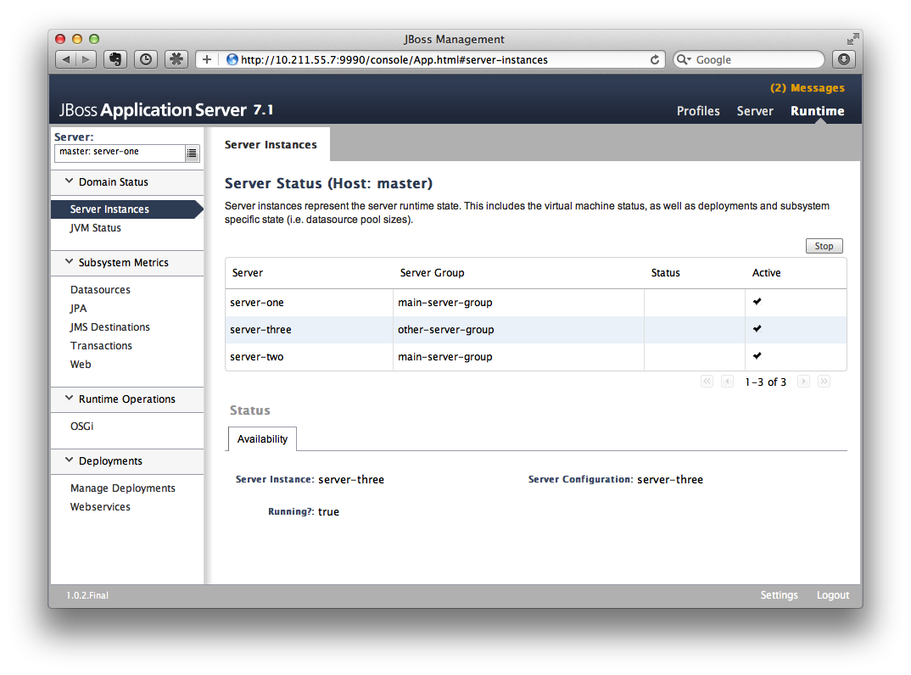
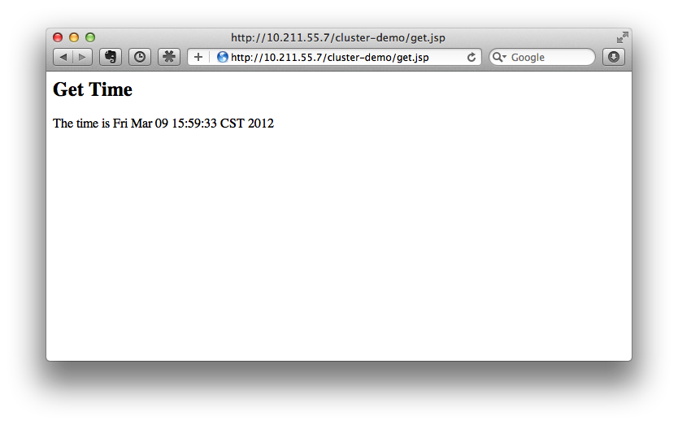

© 2017–2022 The original authors.
1. Introduction To High Availability Services
1.1. What are High Availability services?
WildFly’s High Availability services are used to guarantee availability of a deployed Jakarta EE application.
Deploying critical applications on a single node suffers from two potential problems:
-
loss of application availability when the node hosting the application crashes (single point of failure)
-
loss of application availability in the form of extreme delays in response time during high volumes of requests (overwhelmed server)
WildFly supports two features which ensure high availability of critical Jakarta EE applications:
-
fail-over: allows a client interacting with a Jakarta EE application to have uninterrupted access to that application, even in the presence of node failures
-
load balancing: allows a client to have timely responses from the application, even in the presence of high-volumes of requests
| These two independent high availability services can very effectively inter-operate when making use of mod_cluster for load balancing! |
Taking advantage of WildFly’s high availability services is easy, and simply involves deploying WildFly on a cluster of nodes, making a small number of application configuration changes, and then deploying the application in the cluster.
We now take a brief look at what these services can guarantee.
1.2. High Availability through fail-over
Fail-over allows a client interacting with a Jakarta EE application to have uninterrupted access to that application, even in the presence of node failures. For example, consider a Jakarta EE application which makes use of the following features:
-
session-oriented servlets to provide user interaction
-
session-oriented Jakarta Enterprise Beans to perform state-dependent business computation
-
Jakarta Enterprise Beans entity beans to store critical data in a persistent store (e.g. database)
-
SSO login to the application
If the application makes use of WildFly’s fail-over services, a client interacting with an instance of that application will not be interrupted even when the node on which that instance executes crashes. Behind the scenes, WildFly makes sure that all of the user data that the application make use of (HTTP session data, Jakarta Enterprise Beans SFSB sessions, Jakarta Enterprise Beans entities and SSO credentials) are available at other nodes in the cluster, so that when a failure occurs and the client is redirected to that new node for continuation of processing (i.e. the client "fails over" to the new node), the user’s data is available and processing can continue.
The Infinispan and JGroups subsystems are instrumental in providing these data availability guarantees and will be discussed in detail later in the guide.
1.3. High Availability through load balancing
Load balancing enables the application to respond to client requests in a timely fashion, even when subjected to a high-volume of requests. Using a load balancer as a front-end, each incoming HTTP request can be directed to one node in the cluster for processing. In this way, the cluster acts as a pool of processing nodes and the load is "balanced" over the pool, achieving scalability and, as a consequence, availability. Requests involving session-oriented servlets are directed to the the same application instance in the pool for efficiency of processing (sticky sessions). Using mod_cluster has the advantage that changes in cluster topology (scaling the pool up or down, servers crashing) are communicated back to the load balancer and used to update in real time the load balancing activity and avoid requests being directed to application instances which are no longer available.
The mod_cluster subsystem is instrumental in providing support for this High Availability feature of WildFly and will be discussed in detail later in this guide.
1.4. Aims of the guide
This guide aims to:
-
provide a description of the high-availability features available in WildFly and the services they depend on
-
show how the various high availability services can be configured for particular application use cases
-
identify default behavior for features relating to high-availability/clustering
1.5. Organization of the guide
As high availability features and their configuration depend on the particular component they affect (e.g. HTTP sessions, Jakarta Enterprise Beans SFSB sessions, Hibernate), we organize the discussion around those Jakarta EE features. We strive to make each section as self-contained as possible. Also, when discussing a feature, we will introduce any WildFly subsystems upon which the feature depends.
2. Distributable Web Applications
In a standard web application, session state does not survive beyond the lifespan of the servlet container.
A distributable web application allows session state to survive beyond the lifespan of a single server, either via persistence or by replicating state to other nodes in the cluster.
A web application indicates its intention to be distributable via the <distributable/> element within the web application’s deployment descriptor.
e.g.
<web-app xmlns="http://xmlns.jcp.org/xml/ns/javaee"
xmlns:xsi="http://www.w3.org/2001/XMLSchema-instance"
xsi:schemaLocation="http://xmlns.jcp.org/xml/ns/javaee http://xmlns.jcp.org/xml/ns/javaee/web-app_4_0.xsd"
version="4.0">
<distributable/>
</web-app>2.1. Distributable Web Subsystem
The distributable-web subsystem manages a set of session management profiles that encapsulate the configuration of a distributable session manager. One of these profiles will be designated as the default profile (via the "default-session-management" attribute) and thus defines the default behavior of a distributable web application.
[standalone@embedded /] /subsystem=distributable-web:read-attribute(name=default-session-management)
{
"outcome" => "success",
"result" => "default"
}The default session management stores web session data within an Infinispan cache. We can introspect its configuration:
[standalone@embedded /] /subsystem=distributable-web/infinispan-session-management=default:read-resource
{
"outcome" => "success",
"result" => {
"cache" => undefined,
"cache-container" => "web",
"granularity" => "SESSION",
"affinity" => {"primary-owner" => undefined}
}
}2.1.1. Infinispan session management
The infinispan-session-management resource configures a distributable session manager that uses an embedded Infinispan cache.
- cache-container
-
This references a cache-container defined in the Infinispan subsystem into which session data will be stored.
- cache
-
This references a cache within associated cache-container upon whose configuration the web application’s cache will be based. If undefined, the default cache of the associated cache container will be used.
- granularity
-
This defines how the session manager will map a session into individual cache entries. Possible values are:
- SESSION
-
Stores all session attributes within a single cache entry. This is generally more expensive than ATTRIBUTE granularity, but preserves any cross-attribute object references.
- ATTRIBUTE
-
Stores each session attribute within a separate cache entry. This is generally more efficient than SESSION granularity, but does not preserve any cross-attribute object references.
- affinity
-
This resource defines the affinity that a web request should have for a given server. The affinity of the associated web session determines the algorithm for generating the route to be appended onto the session ID (within the JSESSIONID cookie, or when encoding URLs). This annotation of the session ID is used by load balancers to advise how future requests for existing sessions should be directed. Routing is designed to be opaque to application code such that calls to
HttpSession.getId()always return an unmodified session ID. This is only generated when creating/updating the JSESSIONID cookie, or when encoding URLs viaHttpServletResponse.encodeURL()andencodeRedirectURL(). Possible values are:- affinity=none
-
Web requests will have no affinity to any particular node. This option is intended for use cases where web session state is not maintained within the application server.
- affinity=local
-
Web requests will have an affinity to the server that last handled a request for a given session. This option corresponds to traditional sticky session behavior.
- affinity=primary-owner
-
Web requests will have an affinity to the primary owner of a given session. This is the default affinity for this distributed session manager. Behaves the same as affinity=local if the backing cache is not distributed nor replicated.
- affinity=ranked
-
Web requests will have an affinity to the first available node in a ranked list comprised of: primary owner, backup nodes, local node (if not a primary nor backup owner). Only for use with load balancers that support multiple routes. Behaves the same as affinity=local if cache is not distributed nor replicated.
- marshaller
-
Specifies the marshalling implementation used to serialize session attributes.
- JBOSS
-
Marshals session attributes using JBoss Marshalling.
- PROTOSTREAM
-
Marshals session attributes using ProtoStream.
e.g. Creating a new session management profile, using ATTRIBUTE granularity with local session affinity:
[standalone@embedded /] /subsystem=distributable-web/infinispan-session-management=foo:add(cache-container=web, granularity=ATTRIBUTE)
{
"outcome" => "success"
}
[standalone@embedded /] /subsystem=distributable-web/infinispan-session-management=foo/affinity=local:add(){allow-resource-service-restart=true}
{
"outcome" => "success"
}2.1.2. HotRod session management
The hotrod-session-management resource configures a distributable session manager where session data is stored in a remote infinispan-server cluster via the HotRod protocol.
- remote-cache-container
-
This references a remote-cache-container defined in the Infinispan subsystem into which session data will be stored.
- cache-configuration
-
If a remote cache whose name matches the deployment name does not exist, this attribute defines a cache configuration within the remote infinispan server, from which an application-specific cache will be created.
- granularity
-
This defines how the session manager will map a session into individual cache entries. Possible values are:
- SESSION
-
Stores all session attributes within a single cache entry. This is generally more expensive than ATTRIBUTE granularity, but preserves any cross-attribute object references.
- ATTRIBUTE
-
Stores each session attribute within a separate cache entry. This is generally more efficient than SESSION granularity, but does not preserve any cross-attribute object references.
- affinity
-
This resource defines the affinity that a web request should have for a given server. The affinity of the associated web session determines the algorithm for generating the route to be appended onto the session ID (within the JSESSIONID cookie, or when encoding URLs). This annotation of the session ID is used by load balancers to advise how future requests for existing sessions should be directed. Routing is designed to be opaque to application code such that calls to
HttpSession.getId()always return an unmodified session ID. This is only generated when creating/updating the JSESSIONID cookie, or when encoding URLs viaHttpServletResponse.encodeURL()andencodeRedirectURL(). Possible values are:- affinity=none
-
Web requests will have no affinity to any particular node. This option is intended for use cases where web session state is not maintained within the application server.
- affinity=local
-
Web requests will have an affinity to the server that last handled a request for a given session. This option corresponds to traditional sticky session behavior.
- marshaller
-
Specifies the marshalling implementation used to serialize session attributes.
- JBOSS
-
Marshals session attributes using JBoss Marshalling.
- PROTOSTREAM
-
Marshals session attributes using ProtoStream.
e.g. Creating a new session management profile "foo" using the cache configuration "bar" defined on a remote infinispan server "datagrid" with ATTRIBUTE granularity:
[standalone@embedded /] /subsystem=distributable-web/hotrod-session-management=foo:add(remote-cache-container=datagrid, cache-configuration=bar, granularity=ATTRIBUTE)
{
"outcome" => "success"
}2.2. Overriding default behavior
A web application can override the default distributable session management behavior in 1 of 2 ways:
-
Reference a session-management profile by name
-
Provide deployment-specific session management configuration
2.2.1. Referencing an existing session management profile
To use an existing distributed session management profile, a web application should include a distributable-web.xml deployment descriptor located within the application’s /WEB-INF directory.
e.g.
<?xml version="1.0" encoding="UTF-8"?>
<distributable-web xmlns="urn:jboss:distributable-web:2.0">
<session-management name="foo"/>
</distributable-web>Alternatively, the target distributed session management profile can be defined within an existing jboss-all.xml deployment descriptor:
e.g.
<?xml version="1.0" encoding="UTF-8"?>
<jboss xmlns="urn:jboss:1.0">
<distributable-web xmlns="urn:jboss:distributable-web:2.0">
<session-management name="foo"/>
</distributable-web>
</jboss>2.2.2. Using a deployment-specific session management profile
If custom session management configuration will only be used by a single web application, you may find it more convenient to define the configuration within the deployment descriptor itself. Ad hoc configuration looks identical to the configuration used by the distributable-web subsystem.
e.g.
<?xml version="1.0" encoding="UTF-8"?>
<distributable-web xmlns="urn:jboss:distributable-web:2.0">
<infinispan-session-management cache-container="foo" cache="bar" granularity="SESSION">
<primary-owner-affinity/>
</infinispan-session-management>
</distributable-web>Alternatively, session management configuration can be defined within an existing jboss-all.xml deployment descriptor:
e.g.
<?xml version="1.0" encoding="UTF-8"?>
<jboss xmlns="urn:jboss:1.0">
<distributable-web xmlns="urn:jboss:distributable-web:2.0">
<infinispan-session-management cache-container="foo" cache="bar" granularity="ATTRIBUTE">
<local-affinity/>
</infinispan-session-management>
</distributable-web>
</jboss>2.3. Distributable Shared Sessions
WildFly supports the ability to share sessions across web applications within an enterprise archive.
In previous releases, WildFly always presumed distributable session management of shared sessions.
Version 2.0 of the shared-session-config deployment descriptor was updated to allow an EAR to opt-in to this behavior using the familiar <distributable/> element.
Additionally, you can customize the behavior of the distributable session manager used for session sharing via the same configuration mechanism described in the above sections.
e.g.
<?xml version="1.0" encoding="UTF-8"?>
<jboss xmlns="urn:jboss:1.0">
<shared-session-config xmlns="urn:jboss:shared-session-config:2.0">
<distributable/>
<session-config>
<cookie-config>
<path>/</path>
</cookie-config>
</session-config>
</shared-session-config>
<distributable-web xmlns="urn:jboss:distributable-web:2.0">
<session-management name="foo"/>
</distributable-web>
</jboss>2.4. Optimizing performance of distributed web applications
One of the primary design goals of WildFly’s distributed session manager was the parity of HttpSession semantics between distributable and non-distributable web applications. In order to provide predictable behavior suitable for most web applications, the default distributed session manager configuration is quite conservative, generally favoring consistency over availability. However, these defaults may not be appropriate for your application. In general, the effective performance of the distributed session manager is constrained by:
-
Replication/persistence payload size
-
Locking/isolation of a given session
To optimize the configuration of the distributed session manager for your application, you can address the above constraints by tuning one or more of the following:
2.4.1. Session granularity
By default, WildFly’s distributed session manager uses SESSION granularity, meaning that all session attributes are stored within a single cache entry. While this ensures that any object references shared between session attributes are preserved following replication/persistence, it means that a change to a single attribute results in the replication/persistence of all attributes.
If your application does not share any object references between attributes, users are strongly advised to use ATTRIBUTE granularity. Using ATTRIBUTE granularity, each session attribute is stored in a separate cache entry. This means that a given request is only required to replicate/persist those attributes that were added/modified/removed/mutated in a given request. For read-heavy applications, this can dramatically reduce the replication/persistence payload per request.
2.4.2. Session concurrency
WildFly’s default distributed session manager behavior is also conservative with respect to concurrent access to a given session. By default, a request acquires exclusive access to its associated session for the duration of a request, and until any async child context is complete. This maximizes the performance of a single request, as each request corresponds to a single cache transaction; allows for repeatable read semantics to the session; and ensures that subsequent requests are not prone to stale reads, even when handled by another cluster member.
However, if multiple requests attempt to access the same session concurrently, their processing will be effectively serialized. This might not be feasible, especially for heavily asynchronous web applications.
Relaxing transaction isolation from REPEATABLE_READ to READ_COMMITTED on the associated cache configuration will allow concurrent requests to perform lock-free (but potentially stale) reads by deferring locking to the first attempt to write to the session. This improves the throughput of requests for the same session for highly asynchronous web applications whose session access is read-heavy.
e.g.
/subsystem=infinispan/cache-container=web/distributed-cache=dist/component=locking:write-attribute(name=isolation, value=READ_COMMITTED)For asynchronous web applications whose session access is write-heavy, merely relaxing transaction isolation is not likely to be sufficient. These web applications will likely benefit from disabling cache transactions altogether. When transactions are disabled, cache entries are locked and released for every write to the session, resulting in last-write-wins semantics. For write-heavy applications, this typically improves the throughput of concurrent requests for the same session, at the cost of longer response times for individual requests.
/subsystem=infinispan/cache-container=web/distributed-cache=dist/component=transaction:write-attribute(name=mode, value=NONE)| Relaxing transaction isolation currently prevents WildFly from enforcing that a given session is handled by one JVM at a time, a constraint dictated by the servlet specification. |
2.4.3. Session attribute immutability
In WildFly, distributed session attributes are presumed to be mutable objects, unless of a known immutable type, or unless otherwise specified.
Take the following session access pattern:
HttpSession session = request.getSession();
MutableObject object = session.getAttribute("...");
object.mutate();By default, WildFly replicates/persists the mutable session attributes at the end of the request, ensuring that a subsequent request will read the mutated value, not the original value.
However, the replication/persistence of mutable session attributes at the end of the request happens whether or not these objects were actually mutated.
To avoid redundant session writes, users are strongly encouraged to store immutable objects in the session whenever possible.
This allows the application more control over when session attributes will replicate/persist, since immutable session attributes will only update upon explicit calls to HttpSession.setAttribute(…).
WildFly can determine whether most JDK types are immutable, but any unrecognized/custom types are presumed to be mutable. To indicate that a given session attribute of a custom type should be treated as immutable by the distributed session manager, annotate the class with one of the following annotations:
-
@org.wildfly.clustering.web.annotation.Immutable -
@net.jcip.annotations.Immutable
e.g.
@Immutable
public class ImmutableClass implements Serializable {
// ...
}Alternatively, immutable classes can be enumerated via the distributable-web deployment descriptor.
e.g.
<distributable-web xmlns="urn:jboss:distributable-web:2.0">
<session-management>
<immutable-class>foo.bar.ImmutableClass</immutable-class>
<immutable-class>...</immutable-class>
</session-management>
</distributable-web>2.4.4. Session attribute marshalling
Minimizing the replication/persistence payload for individual session attributes has a direct impact on performance by reducing the number of bytes sent over the network or persisted to storage. See the Marshalling section for more details.
3. Distributable Jakarta Enterprise Beans Applications
Just as with standard web applications, session state of stateful session beans (SFSB) contained in a standard EJB application is not guaranteed to survive beyond the lifespan of the Jakarta Enterprise Beans container. And, as with standard web applications, there is a way to allow session state of SFSBs to survive beyond the lifespan of a single server, either through persistence or by replicating state to other nodes in the cluster.
A distributable SFSB is one whose state is made available on multiple nodes in a cluster and which supports failover of invocation attempts: if the node on which the SFSB was created fails, the invocation will be retried on another node in the cluster where the SFSB state is present.
In the case of Jakarta Enterprise Beans applications, whether or not a bean is distributable is determined globally or on a per-bean basis, rather than on an application-wide basis as in the case of distributed HttpSessions.
A stateful session bean within an Jakarta Enterprise Beans application indicates its intention to be distributable by using a passivation-capable cache to store its session state. Cache factories were discussed in the Jakarta Enterprise Beans section of the Wildfly Admin Guide. Additionally, the EJB application needs to be deployed into a server which uses an High Availability (HA) server profile, such as standalone-ha.xml or standalone-full-ha.xml.
Since Jakarta Enterprise Beans are passivation-capable by default, generally, users already using an HA profile will not need to make any configuration changes for their beans to be distributable and, consequently, to support failover. More fine-grained control over whether a bean is distributable can be achieved using the passivationCapable attribute of the @Stateful annotation (or the equivalent deployment descriptor override). A bean which is marked as @Stateful(passivationCapable=false) will not exhibit distributable behavior (i.e. failover), even when the application containing it is deployed in a cluster.
| More information on passivation-capable beans can be found in Section 4.6.5 of the Jakarta Enterprise Beans specification. |
In the sections that follow, we discuss some aspects of configuring distributable Jakarta Enterprise Beans applications in Wildfly.
3.1. Distributable EJB Subsystem
The purpose of the distributable-ejb subsystem is to permit configuration of clustering abstractions required to support those resources of the ejb3 subsystem which support clustered operation. The key resources of the ejb3 subsystem which require clustering abstractions are:
-
cache factoriesPassivating cache factories depend on a bean management provider to provide passivation and persistence of SFSB session states in a local or distributed environment. -
client mappings registriesSupporting remote invocation on SFSB deployed in a cluster require storing client mappings information in a client mappings registry. The registry may be tailored for a local or a distributed environment.
These clustering abstractions are made available to the ejb3 subsystem via the specification and configuration of clustering abstraction 'providers'. We describe the available providers below.
3.1.1. Bean management providers
A bean management provider provides access to a given implementation of a bean manager, used by passivation-capable cache factories defined in the ejb3 subsystem to manage passivation and persistence.
Bean management provider elements are named, and represent different implementation and configuration choices for bean management.
At least one named bean management provider must be defined in the distributable-ejb subsystem and of those, one
instance must be identified as the default bean management provider, using the default-bean-management attribute of
the distributable-ejb subsystem.
The available bean management provider is:
infinispan-bean-management
The infinispan-bean-management provider element represents a bean manager implementation based on an Infinispan cache. The attributes for the infinispan-bean-manager element are:
- cache-container
-
Specifies a cache container defined in the Infinispan subsystem used to support the session state cache
- cache
-
Specifies the session state cache and its configured properties
- max-active-beans
-
Specifies the maximum number of non-passivated session state entries allowed in the cache
3.1.2. Client mappings registries
A client mappings registry provider provides access to a given implementation of a client mappings registry, used by the EJB client invocation mechanism to store information about client mappings for each node in the cluster. Client mappings are defined in the socket bindings configuration of a server and required to allow an EJB client application to connect to servers which are multi-homed (i.e. clients may access the same server from different networks using a different IP address ad port for each interface on the multi-homed server).
The available client mappings registry providers are:
infinispan-client-mappings-registry
The infinispan-client-mappings-registry provider is a provider based on an Infinispan cache and suitable for a clustered server.
- cache-container
-
Specifies a cache container defined in the Infinispan subsystem used to support the client mappings registry
- cache
-
Specifies the cache and its configured properties used to support the client mappings registry
3.1.3. Timer management
The distributable-ejb subsystem defines a set of timer management resources that define behavior for persistent or non-persistent EJB timers.
To use distributable timer management for EJB timers, one must first disable the existing in-memory mechanisms in the ejb3 subsystem. See Jakarta Enterprise Beans Distributed Timer documentation for details.
infinispan-timer-management
This provider stores timer metadata within an embedded Infinispan cache, and utilizes consistent hashing to distribute timer execution between cluster members.
- cache-container
-
Specifies a cache container defined in the Infinispan subsystem
- cache
-
Specifies the a cache configuration within the specified cache-container
- max-active-timers
-
Specifies the maximum number active timers to retain in memory at a time, after which the least recently used will passivate
- marshaller
-
Specifies the marshalling implementation used to serialize the timeout context of a timer.
- JBOSS
-
Marshals session attributes using JBoss Marshalling.
- PROTOSTREAM
-
Marshals session attributes using ProtoStream.
To ensure proper functioning, the associated cache configuration, regardless of type, should use:
-
BATCH transaction mode
-
REPEATABLE_READ lock isolation
Generally, persistent timers will leverage a distributed or replicated cache configuration if in a cluster, or a local, persistent cache configuration if on a single server; while transient timers will leverage a local, passivating cache configuration.
By default, all cluster members will be eligible for timer execution.
A given cluster member exclude itself from timer execution by using a cache capacity-factor of 0.
3.2. Deploying clustered EJBs
Clustering support is available in the HA profiles of WildFly. In this chapter we’ll be using the standalone server for explaining the details. However, the same applies to servers in a domain mode. Starting the standalone server with HA capabilities enabled, involves starting it with the standalone-ha.xml (or even standalone-full-ha.xml):
./standalone.sh -server-config=standalone-ha.xmlThis will start a single instance of the server with HA capabilities. Deploying the EJBs to this instance doesn’t involve anything special and is the same as explained in the application deployment chapter.
Obviously, to be able to see the benefits of clustering, you’ll need
more than one instance of the server. So let’s start another server with
HA capabilities. That another instance of the server can either be on
the same machine or on some other machine. If it’s on the same machine,
the two things you have to make sure is that you pass the port offset
for the second instance and also make sure that each of the server
instances have a unique jboss.node.name system property. You can do
that by passing the following two system properties to the startup
command:
./standalone.sh -server-config=standalone-ha.xml -Djboss.socket.binding.port-offset=<offset of your choice> -Djboss.node.name=<unique node name>Follow whichever approach you feel comfortable with for deploying the EJB deployment to this instance too.
| Deploying the application on just one node of a standalone instance of a clustered server does not mean that it will be automatically deployed to the other clustered instance. You will have to do deploy it explicitly on the other standalone clustered instance too. Or you can start the servers in domain mode so that the deployment can be deployed to all the server within a server group. See the admin guide for more details on domain setup. |
Now that you have deployed an application with clustered EJBs on both the instances, the EJBs are now capable of making use of the clustering features.
3.2.1. Failover for clustered EJBs
Clustered EJBs have failover capability. The state of the @Stateful @Clustered EJBs is replicated across the cluster nodes so that if one of the nodes in the cluster goes down, some other node will be able to take over the invocations. Let’s see how it’s implemented in WildFly. In the next few sections we’ll see how it works for remote (standalone) clients and for clients in another remote WildFly server instance. Although, there isn’t a difference in how it works in both these cases, we’ll still explain it separately so as to make sure there aren’t any unanswered questions.
3.2.2. Remote standalone clients
In this section we’ll consider a remote standalone client (i.e. a client which runs in a separate JVM and isn’t running within another WildFly 8 instance). Let’s consider that we have 2 servers, server X and server Y which we started earlier. Each of these servers has the clustered EJB deployment. A standalone remote client can use either the JNDI approach or native JBoss EJB client APIs to communicate with the servers. The important thing to note is that when you are invoking clustered EJB deployments, you do not have to list all the servers within the cluster (which obviously wouldn’t have been feasible due the dynamic nature of cluster node additions within a cluster).
The remote client just has to list only one of the servers with the
clustering capability. In this case, we can either list server X (in
jboss-ejb-client.properties) or server Y. This server will act as the
starting point for cluster topology communication between the client and
the clustered nodes.
Note that you have to configure the ejb cluster in the jboss-ejb-client.properties configuration file, like so:
remote.clusters=ejb
remote.cluster.ejb.connect.options.org.xnio.Options.SASL_POLICY_NOANONYMOUS=false
remote.cluster.ejb.connect.options.org.xnio.Options.SSL_ENABLED=false3.2.3. Cluster topology communication
When a client connects to a server, the JBoss EJB client implementation (internally) communicates with the server for cluster topology information, if the server had clustering capability. In our example above, let’s assume we listed server X as the initial server to connect to. When the client connects to server X, the server will send back an (asynchronous) cluster topology message to the client. This topology message consists of the cluster name(s) and the information of the nodes that belong to the cluster. The node information includes the node address and port number to connect to (whenever necessary). So in this example, the server X will send back the cluster topology consisting of the other server Y which belongs to the cluster.
In case of stateful (clustered) EJBs, a typical invocation flow involves creating of a session for the stateful bean, which happens when you do a JNDI lookup for that bean, and then invoking on the returned proxy. The lookup for stateful bean, internally, triggers a (synchronous) session creation request from the client to the server. In this case, the session creation request goes to server X since that’s the initial connection that we have configured in our jboss-ejb-client.properties. Since server X is clustered, it will return back a session id and along with send back an "affinity" of that session. In case of clustered servers, the affinity equals to the name of the cluster to which the stateful bean belongs on the server side. For non-clustered beans, the affinity is just the node name on which the session was created. This affinity will later help the EJB client to route the invocations on the proxy, appropriately to either a node within a cluster (for clustered beans) or to a specific node (for non-clustered beans). While this session creation request is going on, the server X will also send back an asynchronous message which contains the cluster topology. The JBoss EJB client implementation will take note of this topology information and will later use it for connection creation to nodes within the cluster and routing invocations to those nodes, whenever necessary.
Now that we know how the cluster topology information is communicated from the server to the client, let see how failover works. Let’s continue with the example of server X being our starting point and a client application looking up a stateful bean and invoking on it. During these invocations, the client side will have collected the cluster topology information from the server. Now let’s assume for some reason, server X goes down and the client application subsequent invokes on the proxy. The JBoss EJB client implementation, at this stage will be aware of the affinity and in this case it’s a cluster affinity. Because of the cluster topology information it has, it knows that the cluster has two nodes server X and server Y. When the invocation now arrives, it sees that the server X is down. So it uses a selector to fetch a suitable node from among the cluster nodes. The selector itself is configurable, but we’ll leave it from discussion for now. When the selector returns a node from among the cluster, the JBoss EJB client implementation creates a connection to that node (if not already created earlier) and creates a EJB receiver out of it. Since in our example, the only other node in the cluster is server Y, the selector will return that node and the JBoss EJB client implementation will use it to create a EJB receiver out of it and use that receiver to pass on the invocation on the proxy. Effectively, the invocation has now failed over to a different node within the cluster.
3.2.4. Remote clients on another instance of WildFly
So far we discussed remote standalone clients which typically use either the EJB client API or the jboss-ejb-client.properties based approach to configure and communicate with the servers where the clustered beans are deployed. Now let’s consider the case where the client is an application deployed another AS7 instance and it wants to invoke on a clustered stateful bean which is deployed on another instance of WildFly. In this example let’s consider a case where we have 3 servers involved. Server X and Server Y both belong to a cluster and have clustered EJB deployed on them. Let’s consider another server instance Server C (which may or may not have clustering capability) which acts as a client on which there’s a deployment which wants to invoke on the clustered beans deployed on server X and Y and achieve failover.
The configurations required to achieve this are explained in this chapter. As you can see the configurations are done in a jboss-ejb-client.xml which points to a remote outbound connection to the other server. This jboss-ejb-client.xml goes in the deployment of server C (since that’s our client). As explained earlier, the client configuration need not point to all clustered nodes. Instead it just has to point to one of them which will act as a start point for communication. So in this case, we can create a remote outbound connection on server C to server X and use server X as our starting point for communication. Just like in the case of remote standalone clients, when the application on server C (client) looks up a stateful bean, a session creation request will be sent to server X which will send back a session id and the cluster affinity for it. Furthermore, server X asynchronously send back a message to server C (client) containing the cluster topology. This topology information will include the node information of server Y (since that belongs to the cluster along with server X). Subsequent invocations on the proxy will be routed appropriately to the nodes in the cluster. If server X goes down, as explained earlier, a different node from the cluster will be selected and the invocation will be forwarded to that node.
As can be seen both remote standalone client and remote clients on another WildFly instance act similar in terms of failover.
| References in this document to Enterprise JavaBeans (EJB) refer to the Jakarta Enterprise Beans unless otherwise noted. |
4. Messaging
This section is under development intending to describe high availability features and configuration pertaining to Jakarta Messaging (JMS).
5. Load Balancing
5.1. mod_cluster Subsystem
The mod_cluster integration is done via the mod_cluster subsystem.
5.1.1. Configuration
Instance ID or JVMRoute
The instance-id or JVMRoute defaults to jboss.node.name property passed
on server startup (e.g. via -Djboss.node.name=XYZ).
[standalone@localhost:9990 /] /subsystem=undertow:read-attribute(name=instance-id)
{
"outcome" => "success",
"result" => expression "${jboss.node.name}"
}To configure instance-id statically, configure the corresponding property in Undertow subsystem:
[standalone@localhost:9990 /] /subsystem=undertow:write-attribute(name=instance-id,value=myroute)
{
"outcome" => "success",
"response-headers" => {
"operation-requires-reload" => true,
"process-state" => "reload-required"
}
}Proxies
By default, mod_cluster is configured for multicast-based discovery. To specify a static list of proxies, create a remote-socket-binding for each proxy and then reference them in the 'proxies' attribute. See the following example for configuration in the domain mode:
[domain@localhost:9990 /] /socket-binding-group=ha-sockets/remote-destination-outbound-socket-binding=proxy1:add(host=10.21.152.86, port=6666)
{
"outcome" => "success",
"result" => undefined,
"server-groups" => undefined
}
[domain@localhost:9990 /] /socket-binding-group=ha-sockets/remote-destination-outbound-socket-binding=proxy2:add(host=10.21.152.87, port=6666)
{
"outcome" => "success",
"result" => undefined,
"server-groups" => undefined
}
[domain@localhost:9990 /] /profile=ha/subsystem=modcluster/proxy=default:write-attribute(name=proxies, value=[proxy1, proxy2])
{
"outcome" => "success",
"result" => undefined,
"server-groups" => undefined
}
[domain@localhost:9990 /] :reload-servers
{
"outcome" => "success",
"result" => undefined,
"server-groups" => undefined
}Multiple mod_cluster Configurations
Since WildFly 14 mod_cluster subsystem supports multiple named proxy configurations also allowing for registering non-default Undertow servers with the reverse proxies. Moreover, this allows single application server node to register with different groups of proxy servers.
See the following example which adds another Undertow AJP listener, server and a host and adds a new mod_cluster configuration which registers this host using advertise mechanism.
/socket-binding-group=standard-sockets/socket-binding=ajp-other:add(port=8010)
/subsystem=undertow/server=other-server:add
/subsystem=undertow/server=other-server/ajp-listener=ajp-other:add(socket-binding=ajp-other)
/subsystem=undertow/server=other-server/host=other-host:add(default-web-module=root-other.war)
/subsystem=undertow/server=other-server/host=other-host/location=other:add(handler=welcome-content)
/subsystem=undertow/server=other-server/host=other-host:write-attribute(name=alias,value=[localhost]))
/socket-binding-group=standard-sockets/socket-binding=modcluster-other:add(multicast-address=224.0.1.106,multicast-port=23364)
/subsystem=modcluster/proxy=other:add(advertise-socket=modcluster-other,balancer=other-balancer,connector=ajp-other)
reload5.1.2. Runtime Operations
The modcluster subsystem supports several operations:
[standalone@localhost:9990 /] /subsystem=modcluster/proxy=default:read-operation-names
{
"outcome" => "success",
"result" => [
"add",
"add-custom-metric",
"add-metric",
"add-proxy",
"disable",
"disable-context",
"enable",
"enable-context",
"list-proxies",
"read-attribute",
"read-children-names",
"read-children-resources",
"read-children-types",
"read-operation-description",
"read-operation-names",
"read-proxies-configuration",
"read-proxies-info",
"read-resource",
"read-resource-description",
"refresh",
"remove-custom-metric",
"remove-metric",
"remove-proxy",
"reset",
"stop",
"stop-context",
"validate-address",
"write-attribute"
]
}The operations specific to the modcluster subsystem are divided in 3 categories the ones that affects the configuration and require a restart of the subsystem, the one that just modify the behaviour temporarily and the ones that display information from the httpd part.
operations displaying httpd information
There are 2 operations that display how Apache httpd sees the node:
read-proxies-configuration
Send a DUMP message to all Apache httpd the node is connected to and display the message received from Apache httpd.
[standalone@localhost:9990 /] /subsystem=modcluster/proxy=default:read-proxies-configuration
{
"outcome" => "success",
"result" => [
"neo3:6666",
"balancer: [1] Name: mycluster Sticky: 1 [JSESSIONID]/[jsessionid] remove: 0 force: 1 Timeout: 0 Maxtry: 1
node: [1:1],Balancer: mycluster,JVMRoute: 498bb1f0-00d9-3436-a341-7f012bc2e7ec,Domain: [],Host: 127.0.0.1,Port: 8080,Type: http,flushpackets: 0,flushwait: 10,ping: 10,smax: 26,ttl: 60,timeout: 0
host: 1 [example.com] vhost: 1 node: 1
host: 2 [localhost] vhost: 1 node: 1
host: 3 [default-host] vhost: 1 node: 1
context: 1 [/myapp] vhost: 1 node: 1 status: 1
context: 2 [/] vhost: 1 node: 1 status: 1
",
"jfcpc:6666",
"balancer: [1] Name: mycluster Sticky: 1 [JSESSIONID]/[jsessionid] remove: 0 force: 1 Timeout: 0 maxAttempts: 1
node: [1:1],Balancer: mycluster,JVMRoute: 498bb1f0-00d9-3436-a341-7f012bc2e7ec,LBGroup: [],Host: 127.0.0.1,Port: 8080,Type: http,flushpackets: 0,flushwait: 10,ping: 10,smax: 26,ttl: 60,timeout: 0
host: 1 [default-host] vhost: 1 node: 1
host: 2 [localhost] vhost: 1 node: 1
host: 3 [example.com] vhost: 1 node: 1
context: 1 [/] vhost: 1 node: 1 status: 1
context: 2 [/myapp] vhost: 1 node: 1 status: 1
"
]
}read-proxies-info
Send a INFO message to all Apache httpd the node is connected to and display the message received from Apache httpd.
[standalone@localhost:9990 /] /subsystem=modcluster/proxy=default:read-proxies-info
{
"outcome" => "success",
"result" => [
"neo3:6666",
"Node: [1],Name: 498bb1f0-00d9-3436-a341-7f012bc2e7ec,Balancer: mycluster,Domain: ,Host: 127.0.0.1,Port: 8080,Type: http,Flushpackets: Off,Flushwait: 10000,Ping: 10000000,Smax: 26,Ttl: 60000000,Elected: 0,Read: 0,Transfered: 0,Connected: 0,Load: -1
Vhost: [1:1:1], Alias: example.com
Vhost: [1:1:2], Alias: localhost
Vhost: [1:1:3], Alias: default-host
Context: [1:1:1], Context: /myapp, Status: ENABLED
Context: [1:1:2], Context: /, Status: ENABLED
",
"jfcpc:6666",
"Node: [1],Name: 498bb1f0-00d9-3436-a341-7f012bc2e7ec,Balancer: mycluster,LBGroup: ,Host: 127.0.0.1,Port: 8080,Type: http,Flushpackets: Off,Flushwait: 10,Ping: 10,Smax: 26,Ttl: 60,Elected: 0,Read: 0,Transfered: 0,Connected: 0,Load: 1
Vhost: [1:1:1], Alias: default-host
Vhost: [1:1:2], Alias: localhost
Vhost: [1:1:3], Alias: example.com
Context: [1:1:1], Context: /, Status: ENABLED
Context: [1:1:2], Context: /myapp, Status: ENABLED
"
]
}operations that handle the proxies the node is connected too
There are 3 operation that could be used to manipulate the list of Apache httpd the node is connected to.
list-proxies
Displays the httpd that are connected to the node. The httpd could be discovered via the Advertise protocol or via the proxy-list attribute.
[standalone@localhost:9990 subsystem=modcluster] :list-proxies
{
"outcome" => "success",
"result" => [
"proxy1:6666",
"proxy2:6666"
]
}Context related operations
Those operations allow to send context related commands to Apache httpd. They are send automatically when deploying or undeploying webapps.
enable-context
Tell Apache httpd that the context is ready receive requests.
[standalone@localhost:9990 /] /subsystem=modcluster/proxy=default:enable-context(context=/myapp, virtualhost=default-host)
{"outcome" => "success"}Node related operations
Those operations are like the context operation but they apply to all webapps running on the node and operation that affect the whole node.
Configuration
Metric configuration
There are 4 metric operations corresponding to add and remove load metrics to the dynamic-load-provider. Note that when nothing is defined a simple-load-provider is use with a fixed load factor of one.
[standalone@localhost:9990 /] /subsystem=modcluster/proxy=default:read-resource(name=mod-cluster-config)
{
"outcome" => "success",
"result" => {"simple-load-provider" => {"factor" => "1"}}
}that corresponds to the following configuration:
<subsystem xmlns="urn:jboss:domain:modcluster:1.0">
<mod-cluster-config>
<simple-load-provider factor="1"/>
</mod-cluster-config>
</subsystem>Add a metric to the dynamic-load-provider, the dynamic-load-provider in configuration is created if needed.
[standalone@localhost:9990 /] /subsystem=modcluster/proxy=default:add-metric(type=cpu)
{"outcome" => "success"}
[standalone@localhost:9990 /] /subsystem=modcluster/proxy=default:read-resource(name=mod-cluster-config)
{
"outcome" => "success",
"result" => {
"dynamic-load-provider" => {
"history" => 9,
"decay" => 2,
"load-metric" => [{
"type" => "cpu"
}]
}
}
}Remove a metric from the dynamic-load-provider.
[standalone@localhost:9990 /] /subsystem=modcluster/proxy=default:remove-metric(type=cpu)
{"outcome" => "success"}like the add-metric and remove-metric except they require a class parameter instead the type. Usually they needed additional properties which can be specified
[standalone@localhost:9990 /] /subsystem=modcluster/proxy=default:add-custom-metric(class=myclass, property=[("pro1" => "value1"), ("pro2" => "value2")]
{"outcome" => "success"}which corresponds the following in the xml configuration file:
<subsystem xmlns="urn:jboss:domain:modcluster:1.0">
<mod-cluster-config>
<dynamic-load-provider history="9" decay="2">
<custom-load-metric class="myclass">
<property name="pro1" value="value1"/>
<property name="pro2" value="value2"/>
</custom-load-metric>
</dynamic-load-provider>
</mod-cluster-config>
</subsystem>5.1.3. SSL Configuration using Elytron Subsystem
This section provides information how to configure mod_cluster subsystem to protect communication between mod_cluster and load balancer using SSL/TLS using Elytron Subsystem.
Overview
Elytron subsystem provides a powerful and flexible model to configure
different security aspects for applications and the application server
itself. At its core, Elytron subsystem exposes different capabilities to
the application server in order centralize security related
configuration in a single place and to allow other subsystems to consume
these capabilities. One of the security capabilities exposed by Elytron
subsystem is a Client ssl-context that can be used to configure
mod_cluster subsystem to communicate with a load balancer using SSL/TLS.
When protecting the communication between the application server and the
load balancer, you need do define a Client ssl-context in order to:
-
Define a trust store holding the certificate chain that will be used to validate load balancer’s certificate
-
Define a trust manager to perform validations against the load balancer’s certificate
Defining a Trust Store with the Trusted Certificates
To define a trust store in Elytron you can execute the following CLI command:
/subsystem=elytron/key-store=default-trust-store:add(type=PKCS12, relative-to=jboss.server.config.dir, path=application.truststore, credential-reference={clear-text=password})In order to successfully execute the command above you must have a application.truststore file inside your JBOSS_HOME/standalone/configuration directory. Where the trust store is protected by a password with a value password. The trust store must contain the certificates associated with the load balancer or a certificate chain in case the load balancer’s certificate is signed by a CA.
We strongly recommend you to avoid using self-signed certificates with your load balancer. Ideally, certificates should be signed by a CA and your trust store should contain a certificate chain representing your ROOT and Intermediary CAs.
Defining a Trust Manager To Validate Certificates
To define a trust manager in Elytron you can execute the following CLI command:
/subsystem=elytron/trust-manager=default-trust-manager:add(algorithm=PKIX, key-store=default-trust-store)Here we are setting the default-trust-store as the source of the certificates that the application server trusts.
Defining a Client SSL Context and Configuring mod_cluster Subsystem
Finally, you can create the Client SSL Context that is going to be used by the mod_cluster subsystem when connecting to the load balancer using SSL/TLS:
/subsystem=elytron/client-ssl-context=modcluster-client:add(trust-manager=default-trust-manager)Now that the Client ssl-context is defined you can configure
mod_cluster subsystem as follows:
/subsystem=modcluster/proxy=default:write-attribute(name=ssl-context, value=modcluster-client)Once you execute the last command above, reload the server:
reloadUsing a Certificate Revocation List
In case you want to validate the load balancer certificate against a
Certificate Revocation List (CRL), you can configure the trust-manager
in Elytron subsystem as follows:
/subsystem=elytron/trust-manager=default-trust-manager:write-attribute(name=certificate-revocation-list.path, value=intermediate.crl.pem)To use a CRL your trust store must contain the certificate chain in order to check validity of both CRL list and the load balancer`s certificate.
A different way to configure a CRL is using the Distribution Points
embedded in your certificates. For that, you need to configure a
certificate-revocation-list as follows:
/subsystem=elytron/trust-manager=default-trust-manager:write-attribute(name=certificate-revocation-list)5.1.4. Remote User Authentication with Elytron
It is possible to accept a REMOTE_USER already authenticated by the Apache httpd server with Elytron via the AJP protocol.
This can be done by setting up Elytron to secure a WildFly deployment and specifying for the External HTTP mechanism to
be used. This is done by creating a security domain and specifying the External mechanism as one of the mechanism
configurations to be used by the http-authentication-factory:
/subsystem=elytron/http-authentication-factory=web-tests:add(security-domain=example-domain, http-server-mechanism-factory=example-factory,
mechanism-configurations=[{mechanism-name=EXTERNAL}])
Elytron will accept the externally authenticated user and use the specified security domain to perform role mapping to complete authorization.
5.2. Enabling ranked affinity support in load balancer
Enabling ranked affinity support in the server must be accompanied by a compatible load balancer with ranked affinity support enabled. When using WildFly as a load balancer ranked routing can be enabled with the following CLI command:
/subsystem=undertow/configuration=filter/mod-cluster=load-balancer/affinity=ranked:addThe default delimiter which delimiters the node routes is "." which encodes multiple routes as node1.node2.node3.
Should the delimiter be required to be different, this is configurable by the delimiter attribute of the affinity resource.
See the following CLI command:
/subsystem=undertow/configuration=filter/mod-cluster=load-balancer/affinity=ranked:write-attribute(name=delimiter,value=":")5.3. Support for load-balancers relying on affinity cookie
While the Apache family of load-balancers relies on attaching session affinity (routing) information by default to a JSESSIONID cookie or a jsessionid path parameter,
there are other load-balancers that rely on a cookie to drive session affinity.
In order to configure the cookie name and other properties use the following CLI script:
/subsystem=undertow/servlet-container=default/setting=affinity-cookie:add(name=SRV)The affinity can be specified either in the instance-id or by providing jboss.node.name property to the server.
./bin/standalone.sh -c standalone-ha.xml -Djboss.node.name=ribera1For complete documentation on configuring the servlet container refer to Undertow documentation section.
5.3.1. HAProxy
The following is a minimum HAProxy configuration to enable affinity provided by application server to be respected by the given load-balancer.
defaults
timeout connect 5s
timeout client 50s
timeout server 50s
frontend myfrontend
bind 127.0.0.1:8888
default_backend myservers
backend myservers
mode http
cookie SRV indirect preserve
option redispatch
server server1 127.0.0.1:8080 cookie ribera1
server server2 127.0.0.1:8180 cookie ribera2Notice that the proxy server defined cookie names need to correspond with the application server’s instance-id.
6. HA Singleton Features
In general, an HA or clustered singleton is a service that exists on multiple nodes in a cluster, but is active on just a single node at any given time. If the node providing the service fails or is shut down, a new singleton provider is chosen and started. Thus, other than a brief interval when one provider has stopped and another has yet to start, the service is always running on one node.
6.1. Singleton subsystem
WildFly 10 introduced a "singleton" subsystem, which defines a set of policies that define how an HA singleton should behave. A singleton policy can be used to instrument singleton deployments or to create singleton MSC services.
6.1.1. Configuration
The default subsystem configuration from WildFly’s ha and full-ha profile looks like:
<subsystem xmlns="urn:jboss:domain:singleton:1.0">
<singleton-policies default="default">
<singleton-policy name="default" cache-container="server">
<simple-election-policy/>
</singleton-policy>
</singleton-policies>
</subsystem>A singleton policy defines:
-
A unique name
-
A cache container and cache with which to register singleton provider candidates
-
An election policy
-
A quorum (optional)
One can add a new singleton policy via the following management operation:
/subsystem=singleton/singleton-policy=foo:add(cache-container=server)Cache configuration
The cache-container and cache attributes of a singleton policy must reference a valid cache from the Infinispan subsystem. If no specific cache is defined, the default cache of the cache container is assumed. This cache is used as a registry of which nodes can provide a given service and will typically use a replicated-cache configuration.
Election policies
WildFly includes two singleton election policy implementations:
-
simple
Elects the provider (a.k.a. primary provider) of a singleton service based on a specified position in a circular linked list of eligible nodes sorted by descending age. Position=0, the default value, refers to the oldest node, 1 is second oldest, etc. ; while position=-1 refers to the youngest node, -2 to the second youngest, etc.
e.g./subsystem=singleton/singleton-policy=foo/election-policy=simple:add(position=-1) -
random
Elects a random member to be the provider of a singleton service
e.g./subsystem=singleton/singleton-policy=foo/election-policy=random:add()
Preferences
Additionally, any singleton election policy may indicate a preference
for one or more members of a cluster. Preferences may be defined either
via node name or via outbound socket binding name. Node preferences
always take precedent over the results of an election policy.
e.g.
/subsystem=singleton/singleton-policy=foo/election-policy=simple:list-add(name=name-preferences, value=nodeA)
/subsystem=singleton/singleton-policy=bar/election-policy=random:list-add(name=socket-binding-preferences, value=nodeA)Quorum
Network partitions are particularly problematic for singleton services,
since they can trigger multiple singleton providers for the same service
to run at the same time. To defend against this scenario, a singleton
policy may define a quorum that requires a minimum number of nodes to be
present before a singleton provider election can take place. A typical
deployment scenario uses a quorum of N/2 + 1, where N is the anticipated
cluster size. This value can be updated at runtime, and will immediately
affect any active singleton services.
e.g.
/subsystem=singleton/singleton-policy=foo:write-attribute(name=quorum, value=3)6.1.2. Non-HA environments
The singleton subsystem can be used in a non-HA profile, so long as the cache that it references uses a local-cache configuration. In this manner, an application leveraging singleton functionality (via the singleton API or using a singleton deployment descriptor) will continue function as if the server was a sole member of a cluster. For obvious reasons, the use of a quorum does not make sense in such a configuration.
6.2. Singleton deployments
WildFly 10 resurrected the ability to start a given deployment on a single node in the cluster at any given time. If that node shuts down, or fails, the application will automatically start on another node on which the given deployment exists. Long time users of JBoss AS will recognize this functionality as being akin to the HASingletonDeployer, a.k.a. " deploy-hasingleton", feature of AS6 and earlier.
6.2.1. Usage
A deployment indicates that it should be deployed as a singleton via a
deployment descriptor. This can either be a standalone
/META-INF/singleton-deployment.xml file or embedded within an existing
jboss-all.xml descriptor. This descriptor may be applied to any
deployment type, e.g. JAR, WAR, EAR, etc., with the exception of a
subdeployment within an EAR.
e.g.
<singleton-deployment xmlns="urn:jboss:singleton-deployment:1.0" policy="foo"/>The singleton deployment descriptor defines which singleton policy should be used to deploy the application. If undefined, the default singleton policy is used, as defined by the singleton subsystem.
Using a standalone descriptor is often preferable, since it may be
overlaid onto an existing deployment archive.
e.g.
deployment-overlay add --name=singleton-policy-foo --content=/META-INF/singleton-deployment.xml=/path/to/singleton-deployment.xml --deployments=my-app.jar --redeploy-affected6.2.2. Singleton Deployment metrics
The singleton subsystem registers a set of runtime metrics for each singleton deployment installed on the server.
- is-primary
-
Indicates whether the node on which the operation was performed is the primary provider of the given singleton deployment
- primary-provider
-
Identifies the node currently operating as the primary provider for the given singleton deployment
- providers
-
Identifies the set of nodes on which the given singleton deployment is installed.
e.g.
/subsystem=singleton/singleton-policy=foo/deployment=bar.ear:read-attribute(name=primary-provider)6.3. Singleton MSC services
The singleton service facility exposes a mechanism for installing an MSC service such that the service only starts on a single member of a cluster at a time. If the member providing the singleton service is shutdown or crashes, the facility automatically elects a new primary provider and starts the service on that node. In general, a singleton election happens in response to any change of membership, where the membership is defined as the set of cluster nodes on which the given service was installed.
6.3.1. Installing an MSC service using an existing singleton policy
While singleton MSC services have been around since AS7, WildFly adds the ability to leverage the singleton subsystem to create singleton MSC services from existing singleton policies.
The singleton subsystem exposes capabilities for each singleton policy it defines.
These policies, encapsulated by the org.wildfly.clustering.singleton.service.SingletonPolicy interface, can be referenced via the following capability name:
"org.wildfly.clustering.singleton.policy" + policy-name
You can reference the default singleton policy of the server via the name: "org.wildfly.clustering.singleton.default-policy" e.g.
public class MyServiceActivator implements ServiceActivator {
@Override
public void activate(ServiceActivatorContext context) {
ServiceName name = ServiceName.parse("my.service.name");
// Use default singleton policy
Supplier<SingletonPolicy> policy = new ActiveServiceSupplier<>(context.getServiceTarget(), ServiceName.parse(SingletonDefaultRequirement.SINGLETON_POLICY.getName()));
ServiceBuilder<?> builder = policy.get().createSingletonServiceConfigurator(name).build(context.getServiceTarget());
Service service = new MyService();
builder.setInstance(service).install();
}
}6.3.2. Singleton MSC Service metrics
The singleton subsystem registers a set of runtime metrics for each singleton MSC service installed via a given singleton policy.
- is-primary
-
Indicates whether the node on which the operation was performed is the primary provider of the given singleton service
- primary-provider
-
Identifies the node currently operating as the primary provider for the given singleton service
- providers
-
Identifies the set of nodes on which the given singleton service is installed.
e.g.
/subsystem=singleton/singleton-policy=foo/service=my.service.name:read-attribute(name=primary-provider)
6.3.3. Installing an MSC service using dynamic singleton policy
Alternatively, you can configure a singleton policy dynamically, which is particularly useful if you want to use a custom singleton election policy.
org.wildfly.clustering.singleton.service.SingletonPolicy is a generalization of the org.wildfly.clustering.singleton.service.SingletonServiceConfiguratorFactory interface,
which includes support for specifying an election policy, an election listener, and, optionally, a quorum.
The SingletonElectionPolicy is responsible for electing a member to operate as the primary singleton service provider following any change in the set of singleton service providers. Following the election of a new primary singleton service provider, any registered SingletonElectionListener is triggered on every member of the cluster.
The 'SingletonServiceConfiguratorFactory' capability may be referenced using the following capability name: "org.wildfly.clustering.cache.singleton-service-configurator-factory" + container-name + "." + cache-name
You can reference a 'SingletonServiceConfiguratorFactory' using the default cache of a given cache container via the name: "org.wildfly.clustering.cache.default-singleton-service-configurator-factory" + container-name
e.g.
public class MySingletonElectionPolicy implements SingletonElectionPolicy {
@Override
public Node elect(List<Node> candidates) {
// ...
return ...;
}
}
public class MySingletonElectionListener implements SingletonElectionListener {
@Override
public void elected(List<Node> candidates, Node primary) {
// ...
}
}
public class MyServiceActivator implements ServiceActivator {
@Override
public void activate(ServiceActivatorContext context) {
String containerName = "foo";
SingletonElectionPolicy policy = new MySingletonElectionPolicy();
SingletonElectionListener listener = new MySingletonElectionListener();
int quorum = 3;
ServiceName name = ServiceName.parse("my.service.name");
// Use a SingletonServiceConfiguratorFactory backed by default cache of "foo" container
Supplier<SingletonServiceConfiguratorFactory> factory = new ActiveServiceSupplier<>(context.getServiceTarget(), ServiceName.parse(SingletonDefaultCacheRequirement.SINGLETON_SERVICE_CONFIGURATOR_FACTORY.resolve(containerName).getName()));
ServiceBuilder<?> builder = factory.get().createSingletonServiceConfigurator(name)
.electionListener(listener)
.electionPolicy(policy)
.requireQuorum(quorum)
.build(context.getServiceTarget());
Service service = new MyService();
builder.setInstance(service).install();
}
}7. Clustering API
WildFly exposes a public API to deployments for performing common clustering operations, such as:
This zero-dependency API allows an application to perform basic clustering tasks, while remaining decoupled from the libraries that implement WildFly’s clustering logic.
7.1. Group membership
The Group abstraction represents a logical cluster of nodes. The Group service provides the following capabilities:
-
View the current membership of a group.
-
Identifies a designated coordinator for a given group membership. This designated coordinator will be the same on every node for a given membership. Traditionally, the oldest member of the cluster is chosen as the coordinator.
-
Registration facility for notifications of changes to group membership.
WildFly creates a Group instance for every defined channel defined in the JGroups subsystem, as well as a local implementation. The local Group implementation is effectively a singleton membership containing only the current node. e.g.
@Resource(lookup = "java:jboss/clustering/group/ee") // A Group representing the cluster of the "ee" channel
private Group group;
@Resource(lookup = "java:jboss/clustering/group/local") // A non-clustered Group
private Group localGroup;To ensure that your application operates consistently regardless of server configuration, you are strongly recommended to reference a given Group using an alias. Most users should use the "default" alias, which references either:
-
A Group backed by the default channel of the server, if the JGroups subsystem is present
-
A non-clustered Group, if the JGroups subsystem is not present
e.g.
@Resource(lookup = "java:jboss/clustering/group/default")
private Group group;Additionally, WildFly creates a Group alias for every Infinispan cache-container, which references:
-
A Group backed by the transport channel of the cache container
-
A non-clustered Group, if the cache container has no transport
This is useful when using a Group within the context of an Infinispan cache.
e.g.
@Resource(lookup = "java:jboss/clustering/group/server") // Backed by the transport of the "server" cache-container
private Group group;7.1.1. Node
A Node encapsulates a member of a group (i.e. a JGroups address). A Node has the following distinct characteristics, which will be unique for each member of the group:
- getName
-
The distinct logical name of this group member. This value inherently defaults to the hostname of the machine, and can be overridden via the "jboss.node.name" system property. You must override this value if you run multiple servers on the same host.
- getSocketAddress()
-
The distinct bind address/port used by this group member. This will be null if the group is non-clustered.
7.1.2. Membership
A Membership is an immutable encapsulation of a group membership (i.e. a JGroups view). Membership exposes the following properties:
- getMembers()
-
Returns the list of members comprising this group membership. The order of this list will be consistent on all nodes in the cluster.
- isCoordinator()
-
Indicates whether the current member is the coordinator of the group.
- getCoordinator()
-
Returns the member designated as coordinator of this group. This methods will return a consistent value for all nodes in the cluster.
7.1.3. Usage
The Group abstract is effectively a volatile reference to the current membership, and provides a facility for notification of membership changes. It exposes the following properties and operations:
- getName()
-
The logical name of this group.
- getLocalMember()
-
The Node instance corresponding to the local member.
- getMembership()
-
Returns the current membership of this group.
- register(GroupListener)
-
Registers the specific listener to be notified of changes to group membership.
- isSingleton()
-
Indicates whether the groups membership is non-clustered, i.e. will only ever contain a single member.
7.1.4. Example
A distributed "Hello world" example that prints joiners and leavers of a group membership:
public class MyGroupListener implements GroupListener {
@Resource(lookup = "java:jboss/clustering/group/default") (1)
private Group group;
private Registration<GroupListener> listenerRegistration;
@PostConstruct
public void init() {
this.listenerRegistration = this.group.register(this);
System.out.println("Initial membership: " + this.group.getMembership().getMembers());
}
@PreDestroy
public void destroy() {
this.listenerRegistration.close(); (2)
}
@Override
public void membershipChanged(Membership previous, Membership current, boolean merged) {
List<Node> previousMembers = previous.getMembers();
List<Node> currentMembers = current.getMembers();
List<Node> joiners = currentMembers.stream().filter(member -> !previousMembers.contains(member)).collect(Collectors.toList());
if (!joiners.isEmpty()) {
System.out.println("Welcome: " + joiners);
}
List<Node> leavers = previousMembers.stream().filter(member -> !currentMembers.contains(member)).collect(Collectors.toList());
if (!leavers.isEmpty()) {
System.out.println("Goodbye: " + leavers);
}
}
}| 1 | Injects the default Group of the server |
| 2 | Make sure to close your listener registration! |
7.2. Command Dispatcher
A command dispatcher is a mechanism for dispatching commands to be executed on members of a group.
7.2.1. CommandDispatcherFactory
A command dispatcher is created from a CommandDispatcherFactory, an instance of which is created for every defined channel defined in the JGroups subsystem, as well as a local implementation. e.g.
@Resource(lookup = "java:jboss/clustering/dispatcher/ee") // A command dispatcher factory backed by the "ee" channel
private CommandDispatcherFactory factory;
@Resource(lookup = "java:jboss/clustering/dispatcher/local") // The non-clustered command dispatcher factory
private CommandDispatcherFactory localFactory;To ensure that your application functions consistently regardless of server configuration, we recommended that you reference the CommandDispatcherFactory using an alias. Most users should use the "default" alias, which references either:
-
A CommandDispatcherFactory backed by the default channel of the server, if the JGroups subsystem is present
-
A non-clustered CommandDispatcherFactory, if the JGroups subsystem is not present
e.g.
@Resource(lookup = "java:jboss/clustering/dispatcher/default")
private CommandDispatcherFactory factory;Additionally, WildFly creates a CommandDispatcherFactory alias for every Infinispan cache-container, which references:
-
A CommandDispatcherFactory backed by the transport channel of the cache container
-
A non-clustered CommandDispatcherFactory, if the cache container has no transport
This is useful in the case where a CommandDispatcher is used to communicate with members on which a given cache is deployed.
e.g.
@Resource(lookup = "java:jboss/clustering/dispatcher/server") // Backed by the transport of the "server" cache-container
private CommandDispatcherFactory factory;7.2.2. Command
A Command encapsulates logic to be executed on a group member. A Command can leverage 2 type of parameters during execution:
- Sender supplied parameters
-
These are member variables of the Command implementation itself, and are provided during construction of the Command object. As properties of a serializable object, these must also be serializable.
- Receiver supplied parameters, i.e. local context
-
These are encapsulated in a single object, supplied during construction of the CommandDispatcher. The command dispatcher passes the local context as a parameter to the Command.execute(…) method.
7.2.3. CommandDispatcher
The CommandDispatcherFactory creates a CommandDispatcher using a service identifier and a local context. This service identifier is used to segregate commands from multiple command dispatchers. A CommandDispatcher will only receive commands dispatched by a CommandDispatcher with the same service identifier.
Once created, a CommandDispatcher will locally execute any received commands until it is closed. Once closed, a CommandDispatcher is no longer allowed to dispatch commands.
The functionality of a CommandDispatcher boils down to 2 operations:
- executeOnMember(Command, Node)
-
Executes a given command on a specific group member.
- executeOnGroup(Command, Node…)
-
Executes a given command on all members of the group, optionally excluding specific members
Both methods return responses as a CompletionStage, allowing for asynchronous processing of responses as they complete.
7.2.4. Example
To demonstrate how to use a CommandDispatcher, let’s create a distributed "hello world" application.
First, let’s create a simple HelloWorld interface which enables the caller to send a specific message to the entire group:
public interface HelloWorld {
void send(String message);
}Next, we need to define a local command execution context. This should encapsulate any local information we need to make available to the execution of any command received by our CommandDispatcher. For demonstration purposes, let’s make this a separate interface:
public interface LocalContext {
Node getLocalMember();
}Next we create a "hello world" Command that contains a message from the sender, and responds with a message of its own.
public class HelloWorldCommand implements Command<String, LocalContext> {
private final String message;
public HelloWorldCommand(String message) {
this.message = message;
}
@Override
public String execute(LocalContext context) {
System.out.println(String.format("Received message: %s", this.message);
return String.format("Hello from %s", context.getLocalMember().getName());
}
}Finally, we create a @Singleton Jakarta Enterprise Beans that implements our HelloWorld interface:
@Singleton
@Startup
@Local(HelloWorld.class)
public class CommandDispatcherBean implements HelloWorld, LocalContext {
@Resource(lookup = "java:jboss/clustering/dispatcher/default") (1)
private CommandDispatcherFactory factory;
private CommandDispatcher<LocalContext> dispatcher;
@PostConstruct
public void init() {
this.dispatcher = this.factory.createCommandDispatcher(this.getClass().getName(), this);
}
@PreDestroy
public void destroy() {
this.dispatcher.close(); (2)
}
@Override
public Node getLocalMember() {
return this.factory.getGroup().getLocalMember();
}
@Override
public void send(String message) {
Map<Node, CompletionStage<String>> responses = this.dispatcher.executeOnGroup(new HelloWorldCommand(message), this.factory.getGroup().getLocalMember()); (3)
responses.values().forEach(stage -> stage.exceptionally(Exception::getLocalizedMessage).thenAccept(System.out::println));
}
}| 1 | Uses the default CommandDispatcherFactory of the server |
| 2 | Don’t forget to close your CommandDispatcher! |
| 3 | We don’t want to send the message to ourselves, so we exclude the local member |
Now you can use the HelloWorld.send(…) operation to say hello to your cluster.
7.3. Service Provider Registry
A service provider registry is a specialized cache that tracks the group members that provide a given service. The ServiceProviderRegistry might be used in concert with a CommandDispatcher to communicate between a subset of group members on which a given service is installed. It includes a registration facility to receive notifications when the set of nodes providing a given service changes. WildFly uses this internally in its Singleton service/deployment implementation to drive the primary election process.
WildFly exposes a ServiceProviderRegistry (from which a ServiceProviderRegistration is created) for each cache defined by the Infinispan subsystem.
7.3.1. Example
The following is an example of using a ServiceProviderRegistry to publish the availability of a given singleton Jakarta Enterprise Beans. The getProviders() method will return the set of nodes on which the ServiceProviderRegistrationBean is deployed.
@Singleton
@Startup
@Local(ServiceProviderRegistry.class)
public class ServiceProviderRegistrationBean implements ServiceProviderRegistration<String>, ServiceProviderRegistration.Listener {
@Resource(lookup = "java:jboss/clustering/providers/server/default") (1)
private ServiceProviderRegistry registry;
private ServiceProviderRegistration registration;
@PostConstruct
public void init() {
this.registration = this.registry.register(this.getClass().getName(), this);
}
@PreDestroy
public void destroy() {
this.registration.close(); (2)
}
@Override
public void providersChanged(Set<Node> providers) {
System.out.println("%s is now available on the following nodes: %s", this.getClass().getName(), providers);
}
@Override
public String getService() {
return this.registration.getService();
}
@Override
public Set<Node> getProviders() {
return this.registration.getProviders();
}
@Override
public void close() {
// Do nothing - registration is close on bean destroy
}
}| 1 | Uses the default cache of the "server" cache container. |
| 2 | Remember to close the registration! |
7.4. Registry
A registry is a specialized cache for storing a unique key/value pair for each member of a group. This is useful to bridge WildFly’s Group members to an internal identification system used by an application. The Registry service includes a facility for notifying group members of new, updated, or obsolete registry entries.
WildFly exposes a RegistryFactory (from which a Registry is created) for each cache defined by the Infinispan subsystem.
7.4.1. Example
The following Registry example assigns a UUID to each group member, allowing each member to query the identifier of any other member:
@Singleton
@Startup
@Local(Registry.class)
public class RegistryBean implements Registry<UUID, Void> {
@Resource(lookup = "java:jboss/clustering/registry/server/default") (1)
private RegistryFactory<UUID, Void> factory;
private Registry<UUID, Void> registry;
@PostConstruct
public void init() {
this.registry = this.factory.createRegistry(new AbstractMap.SimpleImmutableEntry<>(UUID.randomUUID(), null);
}
@PreDestroy
public void destroy() {
this.registry.close(); (2)
}
@Override
public Group getGroup() {
return this.registry.getGroup();
}
@Override
public Map<UUID, Void> getEntries() {
return this.registry.getEntries();
}
@Override
public Map.Entry<UUID, Void> getEntry(Node node) {
return this.registry.getEntry(node);
}
@Override
public void close() {
// Do nothing - registry is closed on bean destroy
}
}| 1 | Uses the default cache of the "server" cache container. |
| 2 | Remember to close the registry! |
8. JGroups
8.1. JGroups Subsystem
8.1.1. Purpose
The JGroups subsystem provides group communication support for HA services in the form of JGroups channels.
Named channel instances permit application peers in a cluster to communicate as a group and in such a way that the communication satisfies defined properties (e.g. reliable, ordered, failure-sensitive). Communication properties are configurable for each channel and are defined by the protocol stack used to create the channel. Protocol stacks consist of a base transport layer (used to transport messages around the cluster) together with a user-defined, ordered stack of protocol layers, where each protocol layer supports a given communication property.
The JGroups subsystem provides the following features:
-
allows definition of named protocol stacks
-
view run-time metrics associated with channels
-
specify a default stack for general use
In the following sections, we describe the JGroups subsystem.
| JGroups channels are created transparently as part of the clustering functionality (e.g. on clustered application deployment, channels will be created behind the scenes to support clustered features such as session replication or transmission of SSO contexts around the cluster). |
8.1.2. Configuration example
What follows is a sample JGroups subsystem configuration showing all of the possible elements and attributes which may be configured. We shall use this example to explain the meaning of the various elements and attributes.
The schema for the subsystem, describing all valid elements and
attributes, can be found in the WildFly distribution, in the docs/schema
directory.
|
<subsystem xmlns="urn:jboss:domain:jgroups:6.0">
<channels default="ee">
<channel name="ee" stack="udp" cluster="ejb"/>
</channels>
<stacks>
<stack name="udp">
<transport type="UDP" socket-binding="jgroups-udp"/>
<protocol type="PING"/>
<protocol type="MERGE3"/>
<protocol type="FD_SOCK"/>
<protocol type="FD_ALL"/>
<protocol type="VERIFY_SUSPECT"/>
<protocol type="pbcast.NAKACK2"/>
<protocol type="UNICAST3"/>
<protocol type="pbcast.STABLE"/>
<protocol type="pbcast.GMS"/>
<protocol type="UFC"/>
<protocol type="MFC"/>
<protocol type="FRAG3"/>
</stack>
<stack name="tcp">
<transport type="TCP" socket-binding="jgroups-tcp"/>
<socket-protocol type="MPING" socket-binding="jgroups-mping"/>
<protocol type="MERGE3"/>
<protocol type="FD_SOCK"/>
<protocol type="FD_ALL"/>
<protocol type="VERIFY_SUSPECT"/>
<protocol type="pbcast.NAKACK2"/>
<protocol type="UNICAST3"/>
<protocol type="pbcast.STABLE"/>
<protocol type="pbcast.GMS"/>
<protocol type="MFC"/>
<protocol type="FRAG3"/>
</stack>
</stacks>
</subsystem><subsystem>
This element is used to configure the subsystem within a WildFly system profile.
-
xmlnsThis attribute specifies the XML namespace of the JGroups subsystem and, in particular, its version. -
default-stackThis attribute is used to specify a default stack for the JGroups subsystem. This default stack will be used whenever a stack is required but no stack is specified.
<stack>
This element is used to configure a JGroups protocol stack.
-
nameThis attribute is used to specify the name of the stack.
<transport>
This element is used to configure the transport layer (required) of the protocol stack.
-
typeThis attribute specifies the transport type (e.g. UDP, TCP, TCPGOSSIP) -
socket-bindingThis attribute references a defined socket binding in the server profile. It is used when JGroups needs to create general sockets internally. -
diagnostics-socket-bindingThis attribute references a defined socket binding in the server profile. It is used when JGroups needs to create sockets for use with the diagnostics program. For more about the use of diagnostics, see the JGroups documentation for probe.sh. -
default-executorThis attribute references a defined thread pool executor in the threads subsystem. It governs the allocation and execution of runnable tasks to handle incoming JGroups messages. -
oob-executorThis attribute references a defined thread pool executor in the threads subsystem. It governs the allocation and execution of runnable tasks to handle incoming JGroups OOB (out-of-bound) messages. -
timer-executorThis attribute references a defined thread pool executor in the threads subsystem. It governs the allocation and execution of runnable timer-related tasks. -
sharedThis attribute indicates whether or not this transport is shared amongst several JGroups stacks or not. -
thread-factoryThis attribute references a defined thread factory in the threads subsystem. It governs the allocation of threads for running tasks which are not handled by the executors above. -
siteThis attribute defines a site (data centre) id for this node. -
rackThis attribute defines a rack (server rack) id for this node. -
machineThis attribute defines a machine (host) is for this node.
| site, rack and machine ids are used by the Infinispan topology-aware consistent hash function, which when using dist mode, prevents dist mode replicas from being stored on the same host, rack or site |
.
<protocol>
This element is used to configure a (non-transport) protocol layer in the JGroups stack. Protocol layers are ordered within the stack.
-
typeThis attribute specifies the name of the JGroups protocol implementation (e.g. MPING, pbcast.GMS), with the package prefix org.jgroups.protocols removed. -
socket-bindingThis attribute references a defined socket binding in the server profile. It is used when JGroups needs to create general sockets internally for this protocol instance.
<relay>
This element is used to configure the RELAY protocol for a JGroups stack. RELAY is a protocol which provides cross-site replication between defined sites (data centres). In the RELAY protocol, defined sites specify the names of remote sites (backup sites) to which their data should be backed up. Channels are defined between sites to permit the RELAY protocol to transport the data from the current site to a backup site.
-
siteThis attribute specifies the name of the current site. Site names can be referenced elsewhere (e.g. in the JGroups remote-site configuration elements, as well as backup configuration elements in the Infinispan subsystem)
<remote-site>
This element is used to configure a remote site for the RELAY protocol.
-
nameThis attribute specifies the name of the remote site to which this configuration applies. -
stackThis attribute specifies a JGroups protocol stack to use for communication between this site and the remote site. -
clusterThis attribute specifies the name of the JGroups channel to use for communication between this site and the remote site.
8.1.3. Use Cases
In many cases, channels will be configured via XML as in the example above, so that the channels will be available upon server startup. However, channels may also be added, removed or have their configurations changed in a running server by making use of the WildFly management API command-line interface (CLI). In this section, we present some key use cases for the JGroups management API.
The key use cases covered are:
-
adding a stack
-
adding a protocol to an existing stack
-
adding a property to a protocol
| The WildFly management API command-line interface (CLI) itself can be used to provide extensive information on the attributes and commands available in the JGroups subsystem interface used in these examples. |
8.2. Member Discovery
8.2.1. Discovery for Kubernetes
KUBE_PING is a discovery protocol for JGroups cluster nodes managed by Kubernetes.
Since Kubernetes is in charge of launching nodes, it knows the addresses of all pods it started,
and is therefore an ideal place to ask for cluster discovery.
Discovery is therefore done by asking Kubernetes for a list of addresses of all cluster nodes.
Combined with bind_port / port_range, the protocol will then send a discovery request to all instances and wait for the responses.
To reconfigure an existing server profile with KUBE_PING use the following CLI batch replacing the namespace,
labels and stack name (tcp) with the target stack:
batch
/subsystem=jgroups/stack=tcp/protocol=MPING:remove()
/subsystem=jgroups/stack=tcp/protocol=kubernetes.KUBE_PING:add(add-index=1, properties={namespace="production", labels="cluster=nyc"})
run-batch| To be able to query the Kubernetes server ensure view permissions are granted on the service account. |
For advanced configuration options, please visit protocol’s documentation here.
8.2.2. Discovery for AWS EC2
The org.jgroups.protocols.aws.S3_PING is a discovery protocol using AWS S3 buckets as cluster information store.
To provision using Galleon, use the jgroups-aws layer.
Note that the layer does not update configuration, only provisions necessary modules.
The following minimal example updates the existing tcp stack to use this discovery protocol instead of MPING:
batch
/subsystem=jgroups/stack=tcp/protocol=MPING:remove()
/subsystem=jgroups/stack=tcp/protocol=org.jgroups.protocols.aws.S3_PING:add(add-index=1, module="org.jgroups.aws", properties={region_name="eu-central-1", bucket_name="jgroups-s3"})
run-batchThe S3 client used by the protocol uses the default credential store provider.
Refer to AWS documentation how to generate and supply appropriate credentials.
For instance, credentials can be provided by Java system properties (aws.accessKeyId and aws.secretAccessKey),
environmental properties (AWS_ACCESS_KEY_ID and AWS_SECRET_ACCESS_KEY), etc.
For advanced configuration options, please visit protocol’s documentation here.
9. Infinispan
9.1. Infinispan Subsystem
The Infinispan subsystem configures a set of Infinispan cache containers and cache configurations for use by WildFly clustering services.
9.1.1. Cache container
A cache container manages a set of cache configurations that share the same transport and marshalling configuration. Cache containers returned by the Infinispan subsystem are auto-configured with the following customizations:
-
A custom transport capable of sharing a JGroups channel defined by the JGroups subsystem.
-
Uses WildFly’s mbean server, if the org.jboss.as.jmx extension is present.
-
Marshaller configured to resolve classes using JBoss Modules.
-
Marshaller configured with a set of marshalling optimizations for common JDK classes
-
Marshaller configured with additional Externalizers loadable from the configured module attribute.
e.g. To create a new cache container that loads marshallers from the "org.bar" module:
/subsystem=infinispan/cache-container=foo:add(module=org.foo)A cache container may designate a specific cache as its default cache, i.e. the cache returned via CacheContainer.getCache():
e.g. To set "bar" as the default cache of the "foo" container:
/subsystem=infinispan/cache-container=foo:write-attribute(name=default-cache, value=bar)A cache container can be injected directly into Jakarta EE applications using the @Resource annotation, e.g.
@Resource(lookup = "java:jboss/infinispan/container/foo")
private org.infinispan.manager.EmbeddedCacheManager container;Note that the server will not manage the lifecycle of any caches created from the injected cache manager. The application is responsible for managing the lifecycle of manually created caches.
Transport
Configures the mechanism used by clustered caches to communicate with each other. It is only necessary to define a transport if the cache container contains clustered caches.
To create a JGroups transport using the default channel of the server:
/subsystem=infinispan/cache-container=foo/transport=jgroups:add()To create a JGroups transport using a distinct "alpha" channel, that uses the "tcp" stack:
/subsystem=jgroups/channel=alpha:add(stack=tcp)
/subsystem=infinispan/cache-container=foo/transport=jgroups:add(channel=alpha)For a complete list of transport attributes, refer to the WildFly management model documentation
To remove an existing JGroups transport, you can either use the standard remove resource operation:
/subsystem=infinispan/cache-container=foo/transport=jgroups:remove()… or by adding the "none" transport (which will auto-remove any existing transport):
/subsystem=infinispan/cache-container=foo/transport=none:add(){allow-resource-service-restart=true}Cache types
Infinispan supports a number of cache types for use in both HA and non-HA server profiles.
Local
A local cache stores a given cache entry only on the local node. A local cache does not require a transport, as cache reads and writes are always local.
For more information about this cache type, refer to the the Infinispan documentation.
To create a local cache:
/subsystem=infinispan/cache-container=foo/local-cache=bar:add()For a complete list of local-cache attributes, refer to the WildFly management model documentation
Replicated
A replicated cache stores a given cache entry on every node in the cluster. A replicated cache requires a transport, as cache writes are replicated to all nodes in the cluster on which the associated cache is running.
For more information about this cache type, refer to the the Infinispan documentation.
To create a replicated cache:
/subsystem=infinispan/cache-container=foo/replicated-cache=bar:add()For a complete list of replicated-cache attributes, refer to the WildFly management model documentation
Distributed
A distributed cache stores a given cache entry on a configurable number of nodes in the cluster, assigned via an algorithm based on consistent hashing. A distributed cache requires a transport, as cache writes need to forward to each owner, and cache reads from a non-owner require a remote request.
For more information about this cache type, refer to the the Infinispan documentation.
To create a distributed cache where a given entry is stored on 3 nodes:
/subsystem=infinispan/cache-container=foo/distributed-cache=bar:add(owners=3)For a complete list of distributed-cache attributes, refer to the WildFly management model documentation
Scattered
A scattered cache is a variation of a distributed cache that maintains 2 copies of a particular cache entry. Consequently, it can only tolerate failure of a single node at a time. Primary ownership of a cache entry is determined by the same mechanism used by a distributed cache, while the backup copy is the node that last updated the entry.
This design means that a scattered cache only requires 1 remote invocation to write a given cache entry, regardless of which node initiated the cache operation. By comparison, a distributed cache (with 2 owners) uses 1 remote invocation to write a cache entry if and only if the primary owner initiated the cache operation, and otherwise requires 2 remote invocations.
For more information about this cache type, refer to the the Infinispan documentation.
To create a scattered cache:
/subsystem=infinispan/cache-container=foo/scattered-cache=bar:add()For a complete list of scattered-cache attributes, refer to the WildFly management model documentation
Invalidation
An invalidation cache is a special type of clustered cache that does not share state, but instead ensures that remote state is invalidated any time a given entry is updated locally. An invalidation cache requires a transport, as cache writes trigger invalidation on remote nodes on which the associated cache is running.
For more information about this cache type, refer to the the Infinispan documentation.
To create an invalidation cache:
/subsystem=infinispan/cache-container=foo/invalidation-cache=bar:add()For a complete list of invalidation-cache attributes, refer to the WildFly management model documentation
Cache features
The configuration of a cache is divided into several components, each defining a specific cache feature. Because a given cache configuration requires each component relevant to its cache type, cache add operations and cache component add operations are typically batched. Any undefined components are auto-created using their defaults.
e.g. The following cache add operation:
/subsystem=infinispan/cache-container=foo/local-cache=bar:add()… is actually equivalent to the following sequence of operations:
batch
/subsystem=infinispan/cache-container=foo/local-cache=bar:add()
/subsystem=infinispan/cache-container=foo/local-cache=bar/component=expiration:add()
/subsystem=infinispan/cache-container=foo/local-cache=bar/component=locking:add()
/subsystem=infinispan/cache-container=foo/local-cache=bar/component=transaction:add()
/subsystem=infinispan/cache-container=foo/local-cache=bar/memory=object:add()
/subsystem=infinispan/cache-container=foo/local-cache=bar/store=none:add()
run-batchSimilarly, you can reset all the attributes of a component by simply removing the component. e.g.
/subsystem=infinispan/cache-container=foo/local-cache=bar:component=expiration:remove(){allow-resource-service-restart=true}… is equivalent to:
/subsystem=infinispan/cache-container=foo/local-cache=bar:component=expiration:remove(){allow-resource-service-restart=true}
/subsystem=infinispan/cache-container=foo/local-cache=bar:component=expiration:add(){allow-resource-service-restart=true}Memory
An Infinispan cache can be configured to store cache entries as Java objects or as binary data (i.e. byte[]), either on or off the JVM heap. The type of storage used has semantic implications for the user of the cache. When using object storage, the cache has store-as-reference semantics, whereas when using binary storage the cache has call-by-value semantics. Consider the following logic:
List<String> list = new ArrayList<>();
cache.startBatch();
cache.put("a", list);
list.add("test");
cache.endBatch(true);
List<String> result = cache.get("a");
System.out.println(result.size());How many elements are in the "result" list? The answer depends on how the cache is configured.
When the cache is configured to use object memory, our result list has 1 element. When the cache is configured to use binary (or off-heap) memory, our result list is empty. When using binary memory, the cache value must be marshalled to a byte[] on write and unmarshalled on read, thus any mutations of the cache value in the interim are not reflected in the cache.
When using object storage, cache keys and values are stored as Java object references. Object storage may be configured with a maximum size. When the number of entries in the cache exceeds this threshold, the least recently used entries are evicted from memory.
e.g. To store a maximum of 100 objects in the Java heap:
/subsystem=infinispan/cache-container=foo/local-cache=bar/memory=object:add(size=100)For a complete list of memory=object attributes, refer to the WildFly management model documentation
When using binary storage, each cache entry is stored as a byte[] within the JVM heap. Binary storage may also be configured with a maximum size. This size can be specified either as a maximum number of entries (i.e. COUNT), or as a maximum number of bytes (i.e. MEMORY). When the number of entries in the cache exceeds this threshold, the least recently used entries are evicted from memory.
e.g. To store a maximum of 1 MB of binary data in the Java heap:
/subsystem=infinispan/cache-container=foo/local-cache=bar/memory=binary:add(size=1048576, eviction-type=MEMORY)For a complete list of memory=binary attributes, refer to the WildFly management model documentation
When using off-heap storage, each cache entry is stored as a byte[] in native memory allocated via sun.misc.Unsafe. Off-heap memory storage may also be configured with a maximum size, specified either as a maximum number of entries (i.e. COUNT), or as a maximum number of bytes (i.e. MEMORY). When the number of entries in the cache exceeds this threshold, the least recently used entries are evicted from memory.
e.g. To store a maximum of 1 GB of binary data in native memory outside of the Java heap:
/subsystem=infinispan/cache-container=foo/local-cache=bar/memory=off-heap:add(size=1073741824)For a complete list of memory=off-heap attributes, refer to the WildFly management model documentation
Transactions
An Infinispan cache can be configured as transactional or non-transactional. This behavior is determined by the mode attribute, which supports the following values:
- NONE
-
Non-transactional cache (the default behavior).
- BATCH
-
Transactional cache using a local Infinispan transaction manager. Infinispan transactions are started/committed/rolled-back using Infinispan’s batching API.
- NON_XA
-
Transactional cache configured to use the server’s transaction manager, registering as a Synchronization to the current transaction. Cache commit/rollback happens after the associated transaction completes.
- NON_DURABLE_XA
-
Transactional cache configured to use the server’s transaction manager, enlisting as an XAResource to the current transaction, but without transaction recovery support.
- FULL_XA
-
Transactional cache configured to use the server’s transaction manager, with full transaction recovery support.
Within the context of a transaction, cache write operations must obtain a lock on the affected keys. Locks may be acquired either pessimistically (the default), i.e. before invoking the operation, or optimistically, i.e. before transaction commit.
e.g. To configure a transactional cache using local Infinispan transactions with OPTIMISTIC locking:
/subsystem=infinispan/cache-container=foo/local-cache=bar/component=transaction(mode=BATCH, locking=OPTIMISTIC)For a complete list of transaction attributes, refer to the WildFly management model documentation
Locking
Within the context of a transaction, entries read from the cache are isolated from other concurrent transactions according to the configured isolation level. Infinispan supports the following transaction isolation levels:
- READ_COMMITTED
-
A cache read may return a different value than a previous read within the same transaction, even if a concurrent transaction updated the entry. This is the default isolation level.
- REPEATABLE_READ
-
A cache read will return the same value as a previous read within the same transaction, even if a concurrent transaction updated the entry.
| Cache reads are always lock-free unless invoked using Flag.FORCE_WRITE_LOCK. |
e.g. To configure a cache using REPEATABLE_READ isolation:
/subsystem=infinispan/cache-container=foo/local-cache=bar/component=locking(isolation=REPEATABLE_READ)For a complete list of locking attributes, refer to the WildFly management model documentation
Expiration
The expiration component configures expiration defaults for cache entries. Cache entries may be configured to expire after some duration since creation (i.e. lifespan) or since last accessed (i.e. max-idle).
e.g. To configure expiration of entries older than 1 day, or that have not been accessed within the past hour:
/subsystem=infinispan/cache-container=foo/local-cache=bar/component=expiration(lifespan=86400000, max-idle=3600000)| max-idle based expiration is not generally safe for use with clustered caches, as the meta data of a cache entry is not replicated by cache read operations |
For a complete list of expiration attributes, refer to the WildFly management model documentation
Persistence
An Infinispan cache can optionally load/store cache entries from an external storage. All cache stores support the following attributes:
- fetch-state
-
Indicates whether to refresh persistent state from cluster members on cache start. Does not apply to a local or invalidation cache, nor a shared store. Default is true.
- passivation
-
Indicates whether cache entries should only be persisted upon eviction from memory. Default is true.
- preload
-
Indicates whether cache entries should be loaded into memory on cache start. Default is false.
- purge
-
Indicates whether the cache store should be purged on cache start. Purge should never be enabled on a shared store. Default is true.
- shared
-
Indicates that the same cache store endpoint (e.g. database, data grid, etc.) is used by all members of the cluster. When using a shared cache store, cache entries are only persisted by the primary owner of a given cache entry. Default is false.
To remove an existing cache store, you can either use the standard resource remove operation:
/subsystem=infinispan/cache-container=foo/local-cache=bar/store=file:remove()… or by adding the "none" store (which auto-removes any existing store):
/subsystem=infinispan/cache-container=foo/local-cache=bar/store=none:add(){allow-resource-service-restart=true}A file store persists cache entries to the local filesystem. By default, files are stored in a file named "cache-name.dat" within a subdirectory named "infinispan/container-name" relative to the server’s data directory.
e.g. To persist cache entries to $HOME/foo/bar.dat:
/subsystem=infinispan/cache-container=foo/local-cache=bar/store=file:add(path=foo, relative-to=user.home)A JDBC store persists cache entries to a database.
e.g. To persist cache entries to an H2 database via the ExampleDS data-source:
/subsystem=infinispan/cache-container=foo/local-cache=bar/store=jdbc:add(data-source=ExampleDS, dialect=H2)The HotRod store uses one dedicated remote cache for each cache created by the server.
For Infinispan Server versions supporting protocol version 2.7 and above (Infinispan Server version 9.2)
a persistent remote cache will be automatically created based on default configuration.
The recommended configuration for the remote cache where session data will be offloaded is transactional distribution mode cache with pessimistic locking.
When using Infinispan Server version prior to 9.2, the caches need to be configured manually on the server where cache names correspond to the deployment file names (e.g. test.war).
Once a Remote Cache Container is configured a hotrod store can be configured replacing any existing store.
The following CLI script demonstrates a typical use case for offloading sessions using an invalidation-cache with a shared, persistent infinispan-server store referencing an existing remote-cache-container:
batch
/subsystem=infinispan/cache-container=web/invalidation-cache=foo:add()
/subsystem=infinispan/cache-container=web/invalidation-cache=foo/store=hotrod:add(remote-cache-container=web, cache-configuration=transactional, fetch-state=false, shared=true)
/subsystem=infinispan/cache-container=web/invalidation-cache=foo/component=transaction:add(mode=BATCH)
/subsystem=infinispan/cache-container=web/invalidation-cache=foo/component=locking:add(isolation=REPEATABLE_READ)
run-batchState transfer
The state transfer component defines the behavior for the initial transfer of state from remote caches on cache start. State transfer is only applicable to distributed and replicated caches. When configured with a timeout, a cache is only available after its initial state transfer completes. If state transfer does not complete within the configured timeout, the cache will fail to start.
e.g. To configure a state-transfer timeout of 1 minute:
/subsystem=infinispan/cache-container=foo/local-cache=bar/component=state-transfer:add(timeout=60000)Alternatively, state transfer can be configured to be non-blocking, by configuring a timeout of 0. While this prevents timeouts due to large state transfers, cache operations on the new node will require remote invocations to retrieve the requisite state until state transfer is complete.
e.g. To configure a non-blocking state transfer:
/subsystem=infinispan/cache-container=foo/local-cache=bar/component=state-transfer:add(timeout=0)For a complete list of state-transfer attributes, refer to the WildFly management model documentation
Injecting a cache into Jakarta EE applications
A cache can be injected directly into Jakarta EE applications using the @Resource annotation, e.g.
@Resource(lookup = "java:jboss/infinispan/cache/foo/bar") (1)
private org.infinispan.Cache<Integer, Object> cache;| 1 | where foo is the name of the cache container and bar is the name of the cache to inject |
or in order to inject the default cache of the cache container use the following resource lookup:
@Resource(lookup = "java:jboss/infinispan/cache/foo/default")9.1.2. Remote Cache Container
While Infinispan project is used as a library internally by WildFly to provide data distribution, Infinispan project is also distributed in a standalone server mode. The Infinispan Server cluster operates as a language-independent service accessed remotely over a number of protocols (HotRod, REST, etc).
HotRod is Infinispan’s custom optimized binary protocol which was designed to:
-
enable faster client/server interactions compared to other existing text-based protocols,
-
allow clients to make more intelligent decisions with regards to load-balancing, failover,
-
and provide advanced cache operations.
To learn more about the HotRod protocol itself and how to setup and run Infinispan Server, refer to Infinispan documentation for the appropriate version.
Configuration
To configure a remote-cache-container ensure you have a list of available Infinispan Server nodes.
The following example CLI script first adds socket bindings to two known Infinispan Server nodes,
followed by configuration of the cluster.
batch
/socket-binding-group=standard-sockets/remote-destination-outbound-socket-binding=infinispan-server-1:add(host=server1.example.com, port=11622)
/socket-binding-group=standard-sockets/remote-destination-outbound-socket-binding=infinispan-server-2:add(host=server2.example.com, port=11722)
/subsystem=infinispan/remote-cache-container=foo:add(default-remote-cluster=bar)
/subsystem=infinispan/remote-cache-container=foo/remote-cluster=bar:add(socket-bindings=[infinispan-server-1, infinispan-server-2])
run-batchUpon reload, this will register necessary services for the client.
A HotRod client can be injected directly into Jakarta EE applications using the @Resource annotation.
@Resource(lookup = "java:jboss/infinispan/remote-container/foo")
private org.infinispan.client.hotrod.RemoteCacheContainer client;Security
Securing the store is just a matter of configuring the remote-cache-container with an SSL context.
Please follow the Elytron security guide on how to configure new SSL context
and Infinispan documentation on how to secure Infinispan Server instances.
Once the SSL Context is configured, use the following CLI script to configure remote-cache-container:
/subsystem=infinispan/remote-cache-container=foo/component=security:write-attribute(name=ssl-context, value=hotrod-ssl-context)Statistics
To enable the gathering of statistics for a given remote-cache-container, use the statistics-enabled attribute:
/subsystem=infinispan/remote-cache-container=foo:write-attribute(name=statistics-enabled, value=true)Using the exposed runtime metrics, users can tune the HotRod thread pool configuration by looking at active vs idle connections.
/subsystem=infinispan:remote-cache-container=foo:read-resource(include-runtime=true)The Infinispan subsystem additionally exposes a runtime resource for each started remote cache instance. The runtime remote cache resource exposes usage metrics (e.g. reads, writes, removes, etc) as well as metrics for tuning near-cache sizes (e.g. hits vs misses).
/subsystem=infinispan:remote-cache-container=foo/remote-cache=bar:read-resource(include-runtime=true)Switching remote clusters
If a remote-cache-container configures multiple remote-clusters (e.g. when the infinispan servers are configured with cross site replication), the hotrod client can toggle the remote-cluster with which it interacts via a runtime management operation.
For example, when the client is configured with multiple remote clusters, typically representing multiple data centers (this presumes that the infinispan servers are configured with cross-site replication),
if connectivity to the default remote cluster fails, the client will automatically fail over to a backup remote cluster.
Once the underlying connectivity issue is resolved, a user can manually fail back to the local site via the switch-cluster operation:
/subsystem=infinispan/remote-cache-container=foo/remote-cluster=bar:switch-cluster()This operation returns true if the switch was successful, or false otherwise.
See the server log for specifics in the event that the switch was unsuccessful.
10. Advanced Topics
This section aims to describe cross-cutting topics, such as marshalling.
10.1. Marshalling
In general, the most effective way to improve the scalability of a system with persistent or distributed state is to reduce the number of bytes needed to be sent over the network or persisted to storage. Marshalling is the process by which Java objects in heap space are converted to a byte buffer for replication to other JVMs or for persistence to local or shared storage.
WildFly generally supports 2 marshalling mechanisms for use with its clustering modules: JBoss Marshalling and ProtoStream.
10.1.1. JBoss Marshalling
JBoss Marshalling is a serialization library for objects implementing java.io.Serializable.
When configured to use JBoss Marshalling, an application can optimize the marshalling of a given object, either through custom JDK serialization logic, or by implementing a custom externalizer.
An externalizer is an implementation of the org.wildfly.clustering.marshalling.Externalizer interface, which dictates how a given class should be marshalled.
An externalizer reads/writes the state of an object directly from/to an input/output stream, but also:
-
Allows an application to replicate/persist an object that does not implement
java.io.Serializable -
Eliminates the need to serialize the class descriptor of an object along with its state
e.g.
public class MyObjectExternalizer implements org.wildfly.clustering.marshalling.Externalizer<MyObject> {
@Override
public Class<MyObject> getTargetClass() {
return MyObject.class;
}
@Override
public void writeObject(ObjectOutput output, MyObject object) throws IOException {
// Write object state to stream
}
@Override
public MyObject readObject(ObjectInput input) throws IOException, ClassNotFoundException {
// Construct and read object state from stream
return ...;
}
}Externalizers are dynamically loaded during deployment via the service loader mechanism.
Implementations should be enumerated within a file named:
/META-INF/services/org.wildfly.clustering.marshalling.Externalizer
10.1.2. ProtoStream
ProtoStream is serialization library based on the Protobuf data format. The nature of the Protobuf data format makes it very easy to evolve classes without breaking serialization compatibility. When compared to JBoss Marshalling, ProtoStream is generally more efficient and generates smaller payloads, especially for objects containing fields that are either optional or have a default value. Since marshallable classes are explicitly enumerated, ProtoStream is not vulnerable to the same arbitrary code execution exploits that affect JDK serialization.
When configured to use ProtoStream, a web application will need to register ProtoStream marshallers/schemas for every application-specific type.
WildFly initializes its ProtoStream marshaller using all instances of org.infinispan.protostream.SerializationContextInitializer that are visible to the deployment classpath.
Implementations should be enumerated within a file named:
/META-INF/services/org.infinispan.protostream.SerializationContextInitializer
Simple objects can leverage ProtoStream annotations and auto-generate marshallers and schemas at build time.
e.g.
@AutoProtoSchemaBuilder(includeClasses = { Person.class })
public interface PersonInitalizer extends SerializationContextInitializer {
}
public class Person {
@ProtoField(number = 1)
final String name;
@ProtoField(number = 2, type = Type.UINT32, defaultValue = "0")
final int age;
@ProtoField(number = 3)
Person parent;
@ProtoField(number = 4, collectionImplementation = LinkedList.class)
final List<Person> children;
@ProtoFactory
Person(String name, int age, Person parent, List<Person> children) {
this.name = name;
this.age = age;
this.parent = parent;
this.children = children;
}
public Person(String name, int age) {
this.name = name;
this.age = age;
this.children = new LinkedList<>();
}
public String getName() {
return this.name;
}
public int getAge() {
return this.age;
}
public Person getParent() {
return this.parent;
}
public List<Person> getChildren() {
return this.children;
}
public void setParent(Person parent) {
this.parent = parent;
}
public void addChild(Person child) {
this.children.add(child);
}
}Sufficiently complex objects may require a custom org.infinispan.protostream.SerializationContextInitializer implementation to register custom marshaller implementations and schemas.
Refer to the Infinispan documentation for details.
11. Clustering and Domain Setup Walkthrough
In this article, I’d like to show you how to setup WildFly in domain mode and enable clustering so we could get HA and session replication among the nodes. It’s a step to step guide so you can follow the instructions in this article and build the sandbox by yourself.
11.1. Preparation & Scenario
11.1.1. Preparation
We need to prepare two hosts (or virtual hosts) to do the experiment. We will use these two hosts as following:
-
Install Fedora on them (Other linux version may also fine but I’ll use Fedora in this article)
-
Make sure that they are in same local network
-
Make sure that they can access each other via different TCP/UDP ports (better turn off firewall and disable SELinux during the experiment or they will cause network problems).
11.1.2. Scenario
Here are some details on what we are going to do:
-
Let’s call one host as 'primary', the other one as 'secondary'.
-
Both primary and secondary hosts will run WildFly, and the primary host will run as a domain controller, the secondary host will under the domain management of primary host.
-
Apache httpd will be run on the primary host, and in httpd we will enable the mod_cluster module. The WildFly on primary and secondary hosts will form a cluster and discovered by httpd.

-
We will deploy a demo project into the domain, and verify that the project is deployed into both primary and secondary Host Controllers by the domain controller. Thus we could see that domain management provide us a single point to manage the deployments across multiple hosts in a single domain.
-
We will access the cluster URL and verify that httpd has distributed the request to one of the WildFly hosts. So we could see the cluster is working properly.
-
We will try to make a request on cluster, and if the request is forwarded to the Domain Controller, we then kill the WildFly process on the primary host. After that we will go on requesting cluster and we should see the request is forwarded to the secondary Host Controller, but the session is not lost. Our goal is to verify the HA is working and sessions are replicated.
-
After previous step finished, we reconnect the Domain Controller by restarting it. We should see the Domain Controller is registered back into cluster, also we should see the secondary Host Controller sees the primary Host Controller as a domain controller again and connect to it.

Please don’t worry if you cannot digest so many details currently. Let’s move on and you will get the points step by step.
11.2. Download WildFly
First we should download WildFly from the WildFly website.
Then I unzipped the package to the primary host and try to make a test run:
unzip wildfly-30.0.0.Final.zip
cd wildfly-30.0.0.Final/bin
./domain.shIf everything ok we should see WildFly successfully startup in domain mode:
wildfly-30.0.0.Final/bin$ ./domain.sh
=========================================================================
JBoss Bootstrap Environment
JBOSS_HOME: /Users/weli/Downloads/wildfly-30.0.0.Final
JAVA: /Library/Java/Home/bin/java
JAVA_OPTS: -Xms64m -Xmx512m -XX:MaxPermSize=256m -Djava.net.preferIPv4Stack=true -Dorg.jboss.resolver.warning=true -Dsun.rmi.dgc.client.gcInterval=3600000 -Dsun.rmi.dgc.server.gcInterval=3600000 -Djboss.modules.system.pkgs=org.jboss.byteman -Djava.awt.headless=true
=========================================================================
...
[Server:server-two] 14:46:12,375 INFO [org.jboss.as] (Controller Boot Thread) JBAS015874: WildFly 30.0.0.Final "Kenny" started in 8860ms - Started 210 of 258 services (830 services are lazy, passive or on-demand)Now exit from the primary host and let’s repeat the same steps on the secondary host. Finally, we get WildFly run on both primary and secondary hosts, then we could move on to next step.
11.3. Domain Configuration
11.3.1. Interface config on the Primary Host Controller
In this section we’ll setup both the primary and secondary hosts for them to run in domain mode. And we will configure the primary host to be the domain controller.
First open the host.xml in the primary host for editing:
vi domain/configuration/host.xmlThe default settings for interface in this file is like:
<interfaces>
<interface name="management">
<inet-address value="${jboss.bind.address.management:127.0.0.1}"/>
</interface>
<interface name="public">
<inet-address value="${jboss.bind.address:127.0.0.1}"/>
</interface>
<interface name="unsecured">
<inet-address value="127.0.0.1" />
</interface>
</interfaces>We need to change the address to the management interface so the secondary Host Controller could connect to the primary Host Controller. The public interface allows the application to be accessed by non-local HTTP, and the unsecured interface allows remote RMI access. My primary host’s ip address is 10.211.55.7, so I change the config to:
<interfaces>
<interface name="management">
<inet-address value="${jboss.bind.address.management:10.211.55.7}"/>
</interface>
<interface name="public">
<inet-address value="${jboss.bind.address:10.211.55.7}"/>
</interface>
<interface name="unsecured">
<inet-address value="10.211.55.7" />
</interface>
</interfaces>11.3.2. Interface config on the Secondary Host Controller
Now we will setup interfaces on the secondary host. Let’s edit host.xml. Similar to the steps on the primary host, open host.xml first:
vi domain/configuration/host.xmlThe configuration we’ll use on the secondary host is a little bit different, because we need to let the secondary Host Controller connect to the primary Host Controller. First we need to set the hostname. We change the name property from:
<host name="primary" xmlns="urn:jboss:domain:3.0">to:
<host name="secondary" xmlns="urn:jboss:domain:3.0">Then we need to modify domain-controller section so the secondary Host Controller can connect to primary Host Controller management port:
<domain-controller>
<remote protocol="remote" host="10.211.55.7" port="9999" />
</domain-controller>As we know, 10.211.55.7 is the ip address of the primary host. You may use discovery options to define multiple mechanisms to connect to the remote domain controller:
<domain-controller>
<remote authentication-context="hcAuthContext" >
<discovery-options>
<static-discovery name="primary-native" protocol="remote" host="10.211.55.7" port="9999" />
<static-discovery name="primary-https" protocol="https-remoting" host="10.211.55.7" port="9993"
authentication-context="hcAuthContext"/>
<static-discovery name="primary-http" protocol="http-remoting" host="10.211.55.7" port="9990" />
</discovery-options>
</remote>
</domain-controller>Finally, we also need to configure interfaces section and expose the management ports to public address:
<interfaces>
<interface name="management">
<inet-address value="${jboss.bind.address.management:10.211.55.2}"/>
</interface>
<interface name="public">
<inet-address value="${jboss.bind.address:10.211.55.2}"/>
</interface>
<interface name="unsecured">
<inet-address value="10.211.55.2" />
</interface>
</interfaces>10.211.55.2 is the ip address of the secondary host. Refer to the domain controller configuration above for an explanation of the management, public, and unsecured interfaces.
| It is easier to turn off all firewalls for testing, but in production, you need to enable the firewall and allow access to the following ports: 9999. |
Dry Run
Now everything is set for the two hosts to run in domain mode. Let’s start them by running domain.sh on both hosts. If everything goes fine, we could see from the log on the primary Host Controller:
[Host Controller] 21:30:52,042 INFO [org.jboss.as.domain] (management-handler-threads - 1) JBAS010918: Registered remote secondary host "secondary"That means all the configurations are correct and two hosts are run in domain mode now as expected. Hurrah!
11.4. Deployment
Now we can deploy a demo project into the domain. I have created a simple project located at:
https://github.com/liweinan/cluster-demoWe can use git command to fetch a copy of the demo:
git clone git@github.com:liweinan/cluster-demo.gitIn this demo project we have a very simple web application. In web.xml we’ve enabled session replication by adding following entry:
<distributable/>And it contains a jsp page called put.jsp which will put current time to a session entry called 'current.time':
<%
session.setAttribute("current.time", new java.util.Date());
%>Then we could fetch this value from get.jsp:
The time is <%= session.getAttribute("current.time") %>It’s an extremely simple project but it could help us to test the cluster later: We will access put.jsp from cluster and see the request are distributed to the primary host, then we disconnect the primary Host Controller and access get.jsp. We should see the request is forwarded to secondary host but the 'current.time' value is held by session replication. We’ll cover more details on this one later.
Let’s go back to this demo project. Now we need to create a war from it. In the project directory, run the following command to get the war:
mvn packageIt will generate cluster-demo.war. Then we need to deploy the war into domain. First we should access the http management console on primary host (Because primary host is acting as domain controller):
http://10.211.55.7:9990It will popup a windows ask you to input account name and password, we can use the 'admin' account we’ve added just now. After logging in we could see the 'Server Instances' window. By default there are three servers listed, which are:
-
server-one
-
server-two
-
server-three
We could see server-one and server-two are in running status and they belong to main-server-group; server-three is in idle status, and it belongs to other-server-group.
All these servers and server groups are set in domain.xml on the primary host. What we are interested in is the 'other-server-group' in domain.xml:
<server-group name="other-server-group" profile="ha">
<jvm name="default">
<heap size="64m" max-size="512m"/>
</jvm>
<socket-binding-group ref="ha-sockets"/>
</server-group>We could see this server-group is using 'ha' profile, which then uses 'ha-sockets' socket binding group. It enables all the modules we need to establish cluster later (including infinispan, jgroup and mod_cluster modules). So we will deploy our demo project into a server that belongs to 'other-server-group', so 'server-three' is our choice.
| In newer version of WildFly, the profile 'ha' changes to 'full-ha': |
<server-group name="other-server-group" profile="full-ha">Let’s go back to domain controller’s management console:
http://10.211.55.7:9990Now server-three is not running, so let’s click on 'server-three' and then click the 'start' button at bottom right of the server list. Wait a moment and server-three should start now.
Now we should also enable 'server-three' on the secondary Host Controller: From the top of menu list on left side of the page, we could see now we are managing the primary Host Controller currently. Click on the list, and click 'secondary', then choose 'server-three', and we are in secondary Host Controller management page now.
Then repeat the steps we’ve done on the primary host to start 'server-three' on secondary host.
| server-three on primary and secondary host are two different hosts, their names can be different. |
After server-three on both primary and secondary hosts are started, we will add our cluster-demo.war for deployment. Click on the 'Manage Deployments' link at the bottom of left menu list.

(We should ensure the server-three should be started on both primary and
secondary hosts)
After enter 'Manage Deployments' page, click 'Add Content' at top right corner. Then we should choose our cluster-demo.war, and follow the instruction to add it into our content repository.
Now we can see cluster-demo.war is added. Next we click 'Add to Groups' button and add the war to 'other-server-group' and then click 'save'.
Wait a few seconds, management console will tell you that the project is deployed into 'other-server-group'.：

Please note we have two hosts participate in this server group, so the project should be deployed in both primary and secondary hosts now - that’s the power of domain management.
Now let’s verify this, trying to access cluster-demo from both primary and secondary hosts, and they should all work now:
http://10.211.55.7:8330/cluster-demo/
http://10.211.55.2:8330/cluster-demo/
Now that we have finished the project deployment and see the usages of domain controller, we will then head up for using these two hosts to establish a cluster
| Why is the port number 8330 instead of 8080? Please check the settings in host.xml on both primary and secondary hosts: |
<server name="server-three" group="other-server-group" auto-start="false">
<!-- server-three avoids port conflicts by incrementing the ports in
the default socket-group declared in the server-group -->
<socket-bindings port-offset="250"/>
</server>The port-offset is set to 250, so 8080 + 250 = 8330
Now we quit the WildFly process on both primary and secondary hosts. We have some work left on host.xml configurations. Open the host.xml of primary host, and do some modifications the servers section from:
<server name="server-three" group="other-server-group" auto-start="false">
<!-- server-three avoids port conflicts by incrementing the ports in
the default socket-group declared in the server-group -->
<socket-bindings port-offset="250"/>
</server>to:
<server name="server-three" group="other-server-group" auto-start="true">
<!-- server-three avoids port conflicts by incrementing the ports in
the default socket-group declared in the server-group -->
<socket-bindings port-offset="250"/>
</server>We’ve set auto-start to true so we don’t need to enable it in management console each time WildFly restart. Now open secondary’s host.xml, and modify the server-three section:
<server name="server-three-secondary" group="other-server-group" auto-start="true">
<!-- server-three avoids port conflicts by incrementing the ports in
the default socket-group declared in the server-group -->
<socket-bindings port-offset="250"/>
</server>Besides setting auto-start to true, we’ve renamed the 'server-three' to 'server-three-secondary'. We need to do this because mod_cluster will fail to register the hosts with same name in a single server group. It will cause name conflict.
After finishing the above configuration, let’s restart two as7 hosts and go on cluster configuration.
11.5. Cluster Configuration
We will use mod_cluster + apache httpd on primary host as our cluster controller here. Because WildFly has been configured to support mod_cluster out of box so it’s the easiest way.
| The WildFly domain controller and httpd are not necessary to be on same host. But in this article I just install them all on primary host for convenience. |
First we need to ensure that httpd is installed:
sudo yum install httpdAnd then we need to download newer version of mod_cluster from its website:
http://www.jboss.org/mod_cluster/downloadsThe version I downloaded is:
http://downloads.jboss.org/mod_cluster/1.1.3.Final/mod_cluster-1.1.3.Final-linux2-x86-so.tar.gz| Jean-Frederic has suggested to use mod_cluster 1.2.x. Because 1.1.x it is affected by CVE-2011-4608 |
With mod_cluster-1.2.0 you need to add EnableMCPMReceive in the VirtualHost.
Then we extract it into:
/etc/httpd/modulesThen we edit httpd.conf:
sudo vi /etc/httpd/conf/httpd.confWe should add the modules:
LoadModule slotmem_module modules/mod_slotmem.so
LoadModule manager_module modules/mod_manager.so
LoadModule proxy_cluster_module modules/mod_proxy_cluster.so
LoadModule advertise_module modules/mod_advertise.soPlease note we should comment out:
#LoadModule proxy_balancer_module modules/mod_proxy_balancer.soThis is conflicted with cluster module. And then we need to make httpd to listen to public address so we could do the testing. Because we installed httpd on primary host so we know the ip address of it:
Listen 10.211.55.7:80Then we do the necessary configuration at the bottom of httpd.conf:
# This Listen port is for the mod_cluster-manager, where you can see the status of mod_cluster.
# Port 10001 is not a reserved port, so this prevents problems with SELinux.
Listen 10.211.55.7:10001
# This directive only applies to Red Hat Enterprise Linux. It prevents the temmporary
# files from being written to /etc/httpd/logs/ which is not an appropriate location.
MemManagerFile /var/cache/httpd
<VirtualHost 10.211.55.7:10001>
<Directory />
Order deny,allow
Deny from all
Allow from 10.211.55.
</Directory>
# This directive allows you to view mod_cluster status at URL http://10.211.55.4:10001/mod_cluster-manager
<Location /mod_cluster-manager>
SetHandler mod_cluster-manager
Order deny,allow
Deny from all
Allow from 10.211.55.
</Location>
KeepAliveTimeout 60
MaxKeepAliveRequests 0
ManagerBalancerName other-server-group
AdvertiseFrequency 5
</VirtualHost>| For more details on mod_cluster configurations please see this document: |
http://docs.jboss.org/mod_cluster/1.1.0/html/Quick_Start_Guide.html11.6. Testing
If everything goes fine we can start httpd service now:
service httpd startNow we access the cluster:
http://10.211.55.7/cluster-demo/put.jsp
We should see the request is distributed to one of the hosts (primary or secondary) from the WildFly log. For me the request is sent to primary host:
[Server:server-three] 16:06:22,256 INFO [stdout] (http-10.211.55.7-10.211.55.7-8330-4) Putting date nowNow I disconnect the Domain Controller by using the management interface. Select 'runtime' and the server 'primary' in the upper corners.
Select 'server-three' and kick the stop button, the active-icon should change.
Killing the server by using system commands will have the effect that the Host-Controller restart the instance immediately!
Then wait for a few seconds and access cluster:
http://10.211.55.7/cluster-demo/get.jsp
Now the request should be served by the secondary host and we should see the log from the secondary Host Controller:
[Server:server-three-secondary] 16:08:29,860 INFO [stdout] (http-10.211.55.2-10.211.55.2-8330-1) Getting date nowAnd from the get.jsp we should see that the time we get is the same we’ve put by 'put.jsp'. Thus it’s proven that the session is correctly replicated to the secondary host.
Now we restart the primary Host Controller and should see the host is registered back to cluster.
| It doesn’t matter if you found the request is distributed to the secondary host at first time. Then just disconnect the secondary Host Controller and do the testing, the request should be sent to the primary host instead. The point is we should see the request is redirect from one host to another and the session is held. |
11.7. Special Thanks
Wolf-Dieter Fink has
contributed the updated add-user.sh usages and configs in host.xml from
7.1.0.Final.
Jean-Frederic Clere provided
the mod_cluster 1.2.0 usages.
Misty Stanley-Jones has given a lot of suggestions and helps to make
this document readable.
| References in this document to JavaServer Pages (JSP) refer to the Jakarta Server Pages unless otherwise noted |